Trip to: Iceland (August 2026)
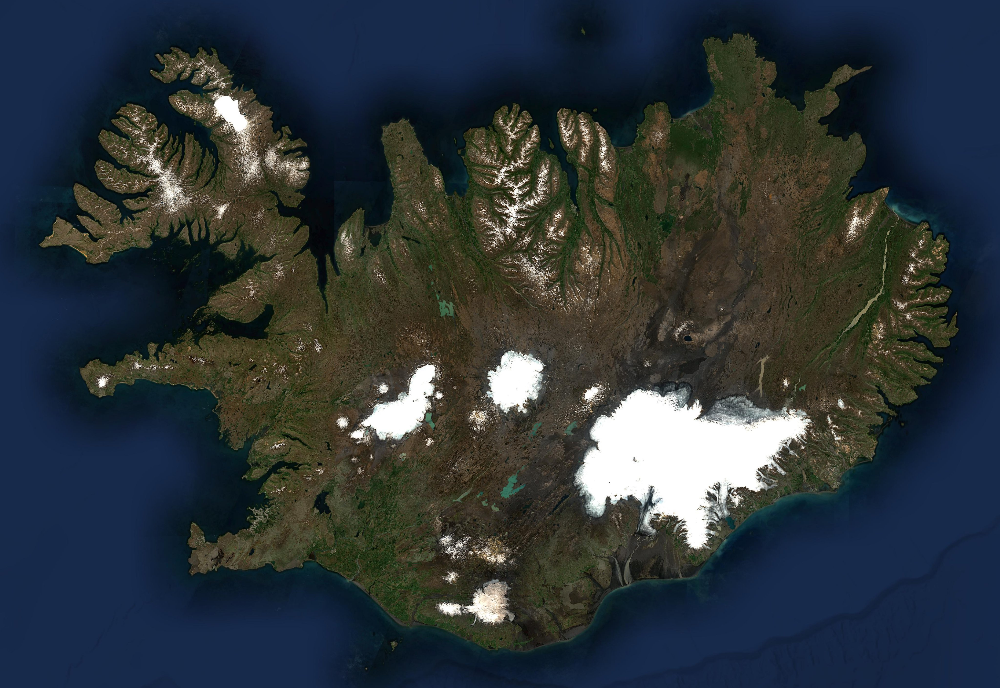
This is a diary about my road trip in Iceland, where I also experienced a total solar eclipse on August 12, 2026.
This page was last updated on August 19, 2026.
Here are the links to all the sections within this page:
- Preface
- Acknowledgements
- Day 0: Hawaiian serendipity
- Day 1: Reykjanes
- Day 2: Golden Circle and Reykjadalur
- Day 3: Landmannalaugar
- Day 4: Glaciers
- Day 5: Eastern valleys
- Day 6: Askja
- Day 7: Geothermal power
- Day 8: Diamond Circle
- Day 9: Akureyri and Vatnsnes
- Day 10: Westfjords
- Day 11: Purple darkness
- Day 12: The long road back
- Day 13: One last walk
Preface
My Hawaiʻi trip diary from August 2025 had such a key role in making my trip unforgettable that I figured I had to write the sequel. So here it is. But, dear reader, please bear in mind that the Hawaiʻi adventure remains special in a way that others cannot be. That being said, if you are curious about the Iceland trip, here is the full story. Enjoy!
Although not dreamt about for 20 years, Iceland is also really my kind of place. Wilderness, volcanoes, glaciers, fjords. This subaerial part of the Mid-Atlantic ridge is a geological paradise. In fact, some parts of it have direct Hawaiian analogues: for example Fagradalsfjall's lava field from its 2021 eruption, perhaps only comparable to Kīlauea's 2018 Leilani Estates eruption in terms of accessibility of the lava flow. Askja was also a particularly fascinating place for me, in part due to the training of NASA's Apollo astronauts that took place in the area, and in part due to its aura of remote and extraterrestrial place—the closest thing to Mauna Loa here. Perhaps the only thing Iceland lacks is biodiversity: in particular, it's too North for any tall or remarkable tree to grow properly.
While this country was an obvious entry in my list for all the reasons above, I prefer to let the timing of my trips be decided by natural events. In this case, the total solar eclipse of August 12, 2026. I had actually seriously considered visiting Iceland before, and decided to defer to 2026 for this reason. This eclipse would also be visible from Spain, which has a higher chance of clear skies. But in my mind there really was no competition between the appeal of Iceland versus Spain. Furthermore, I got lucky enough on April 8, 2024, when I saw totality clearly from Ohio, so I figured I wouldn't be too disappointed if weather didn't cooperate this time around.
Of course, accommodations were completely booked out in the totality path for the days around the eclipse. Campervans too. So I had to get a little creative, and booked a "sleep-in-back" car—I figured that would be enough for a few days of camping, and I would hop between accommodations for the rest of the nights.
Finally, I should mention that on May 12, 2026 I found out I had injured my leg, which an MRI later confirmed to be a pretty serious tibial stress reaction. This had kept me out of running since then, and I even tried and failed to return to running mid-July. So I was going into this Iceland holiday both a little nervous about long hikes, and hopeful that it would mark my return to the outdoor activities I had much missed the previous months.
Acknowledgements
My former colleague and only Icelandic friend, Hófí Hannesdóttir, was so kind to give me all sorts of advice on visiting her beautiful country. This included a quite detailed document listing attractions all across the country and especially the Reykjavík area. Hófí was also in Iceland during my trip, and we managed to meet three times at three different locations!
The first part of this trip was characterized by an unexpected event. Thank you, Leilani. I will not spoil here the rest of the story.
Day 0 (August 1): Hawaiian serendipity
The plane was soon to take off at 23:10, and the two seats to my right were both free. But a passenger walked over, slid into the window seat and told me «I think I'm the last one to board.» She looked a few years younger than me and was wearing the football jersey of Argentina. I asked if she was Argentinian, «No, but my boyfriend is.» We started talking. I explained to her that I was going to Iceland for tourism, due to my fascination for volcanoes and for astronomy, similar to a trip to Hawaiʻi I did the previous year. She had no idea there was an upcoming solar eclipse in Iceland. «So why are you going to Iceland?» «Well, I'm starting something called Watson Fellowship, and a couple of days ago I realized that the rules require me to be out of country before August 2, so I booked the last possible flight. It's just a 2-day layover, then I'll be going to Kenya for at least one month.» «Wait, Watson Fellowship? I know what that is.» The former Hawaiʻi resident who advised me for my trip the previous year also got it: every year, 39 awardees get to spend 12 months around the world pursuing their own project. My seat neighbor wanted to design accessible items and furniture for disabled children in Kenya, Egypt, Brazil, Argentina, and maybe Thailand—even though she was actually an electrical engineer. After a good hour of conversation we agreed it was time to try and sleep. I asked: «By the way, what's your name?» «Leilani.» «L-E-I-L-A-N-I?» «Yes.» I had to give an explanation for my expression of shock. I was planning to visit the Icelandic equivalent of Leilani Estates first thing next day. I didn't even know that was a Hawaiian woman's name.
Day 1 (August 2): Reykjanes
When we woke up, Leilani asked me about my plans. She didn't know what to do in Iceland, and was considering taking a bus to the Blue Lagoon, or maybe renting a car. She shared these thoughts as we got through immigration and baggage claim. Then we hopped on the same bus to Reykjavík and she asked «But... Do you want to do your volcano hikes alone? Would you mind if I joined you? I want to see the lava through your eyes!» How could I not bring a Leilani to a fresh lava field?
From the bus, the Reykjanes peninsula really looked like Hawaiʻi. Pāhoehoe (helluhraun) and ʻaʻā (apalhraun) fields on one side, but covered in moss and lichens rather than ʻōhiʻa shrubs, and the ocean on the other side. I got my rental car, a "sleep-in-back" 4x4 Dacia Duster with surprisingly complete camping equipment, including two sleeping bags (once again, my Hawaiian sleeping bag turned out to be redundant...). I went to pick up Leilani from her accommodation, but she suggested having a coffee before leaving. It was the 358th day after my first cup of coffee. Looks like I do change over the years, after all. So I said yes, then we got some food stocks, and headed back to Reykjanes.
We stopped by the Blue Lagoon first. I had convinced Leilani that it was not worth the time or the money, but we still wanted to take a look. Unfortunately, only a small patch of the characteristic milky blue water amidst black lava was visible before the paid entry gate. Next, we reached the Icelandic Leilani Estates: Fagradalsfjall, the volcano that erupted in 2021, making news all around the world for how easily accessible the active lava flow was. I had selected this as a first-day visit due to its vicinity to Reykjavík, and because it featured an easy hike I could use as a test to gauge my tibia's tolerance. The hike starts among smooth colorful hills, then climbs one of them to reveal the recent black lava flow. I was so happy to be hiking again, and to see once again fresh lava up close.
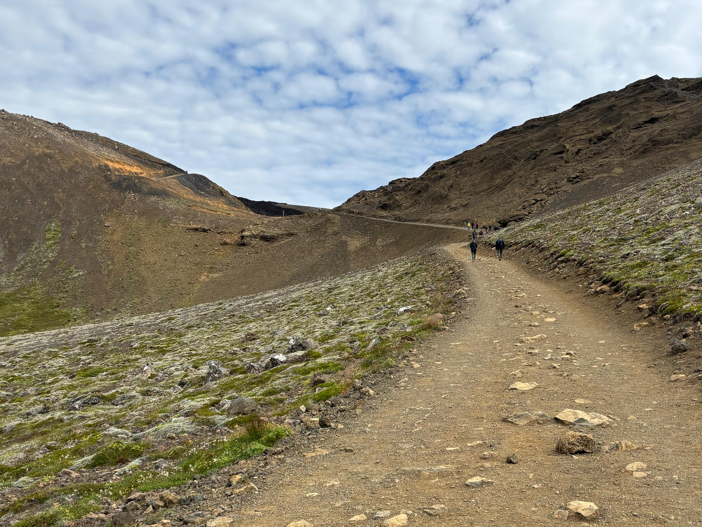

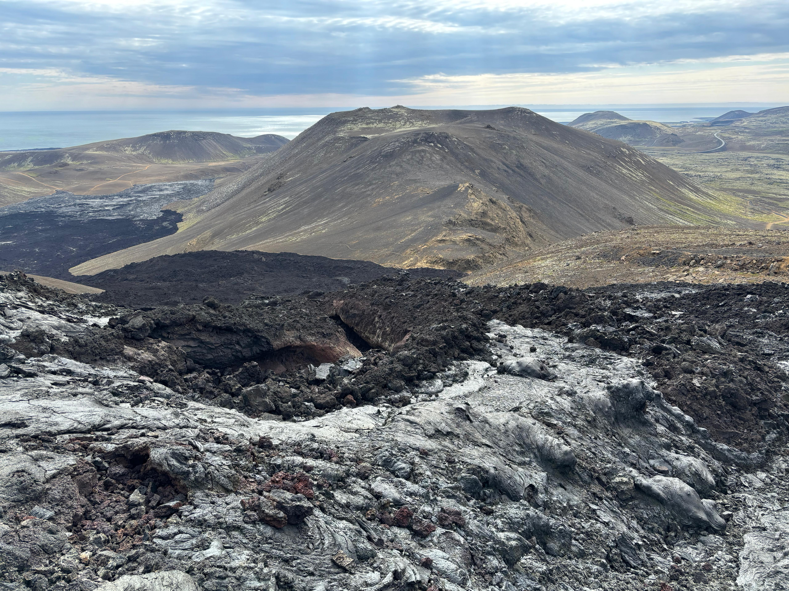
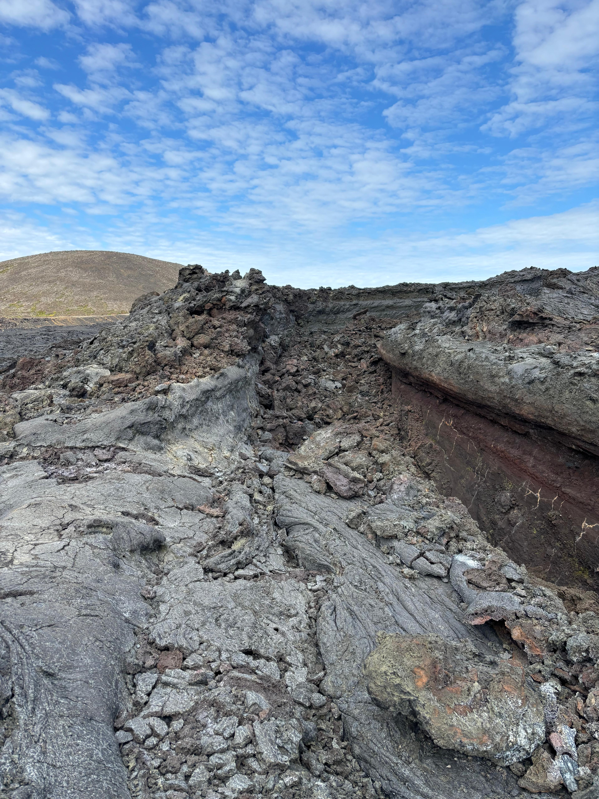
Near a point where a ground barrier had been erected to contain the flow, Leilani got curious about the lava: «Do you think I can walk on it?» «Well... ʻAʻā is very sharp, you have to be careful...» But she had already gone off-trail and stepped on it. At least 15 minutes of pure wonder followed. She was uncovering rocks of different sizes, shapes, colors, and smoothness. Here was a rainbow one! And one with golden stripes! And one with a smooth bottom! I was ready to return to the trail, but Leilani said «What's that? Can we climb it?» The lava flow seemed to become steeper towards the center, with some pāhoehoe covering the ʻaʻā. We climbed the hill, and at the top my jaw dropped: we were on the edge wall of the lava channel, whose interior was completely visible from its side! I had not realized we could so easily access the lava channel. From there, we got a panoramic view of the vent (Geldingadalir), the whole lava flow covering Nátthagi Valley, and the ocean behind it. I realized I had to thank her high openness (the Big 5 trait), because I wouldn't have stepped off trail by myself, missing out on the experience.
We sat there for some time. Our initial plan was to hike one hour and then turn around, and I usually like to have my lunch at the turnaround point. It was actually early afternoon—we hadn't got hungry earlier due to jet lag. I asked «Shall we continue the hike and have lunch? Or... Eat here?» Leilani replied «Honestly? This place is pretty sick.» So we had a memorable and windy lunch while sitting on the edge of the lava channel. We did eventually continue the hike, reached a couple more interesting spots (including a purely pāhoehoe part of the lava flow), and then hiked back. We discussed what exactly makes hiking so enjoyable. We could settle on one half of it: walking outdoors, putting one foot in front of another, avoiding rocks on the ground, are all activities we probably evolved to do as hunter-gatherers, and likely involve less mental stress than the life we created for ourselves after the agricultural revolution. The other half, that is why landscapes or natural areas appear beautiful to our eyes, we had no plausible explanation for.
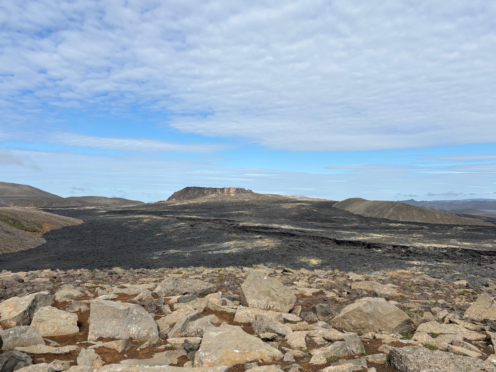
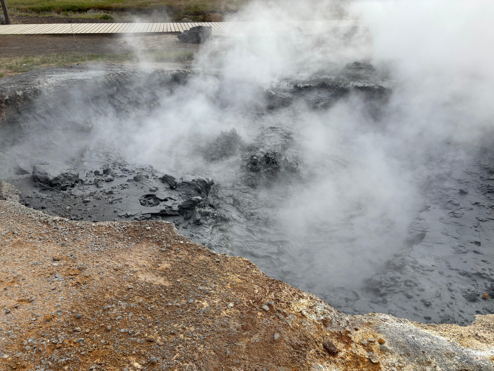
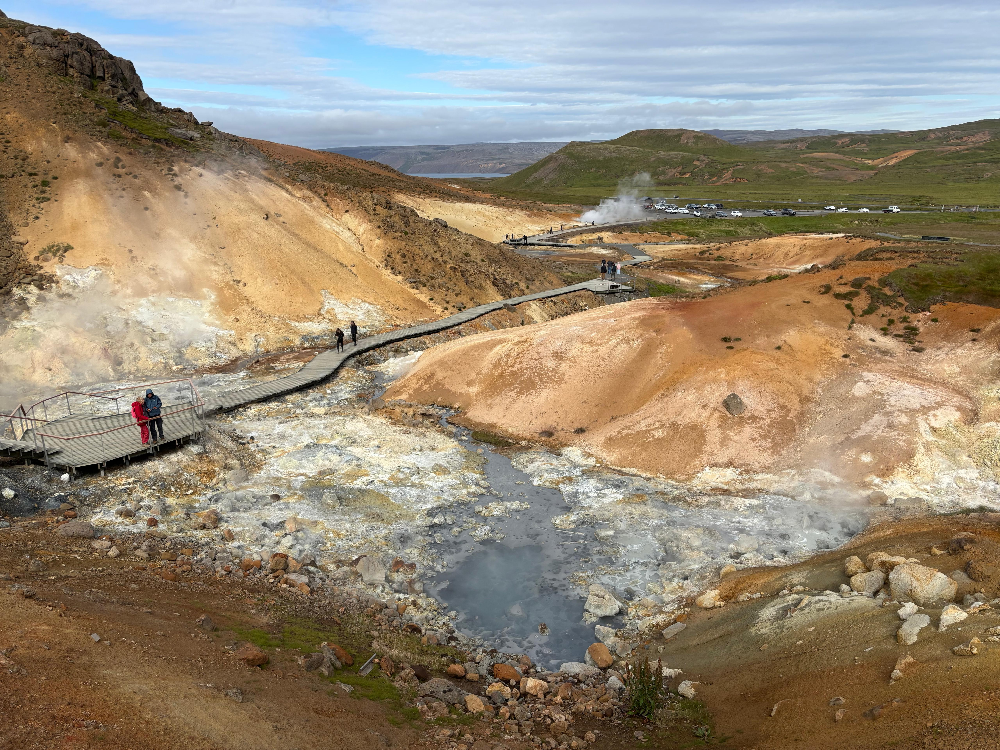
Next, we headed to the Krýsuvík geothermal area. I hadn't seen anything like it since visiting the Phlegraean Fields as a kid. Boiling mud pots, steamy creeks, colorful soil and a strong smell of hydrogen sulfide dominated the scene. It reminded me of the Meteor Falls in Pokémon Emerald. We took a nice walk around the site and got back to the car around 18:00. Driving back to Reykjavík, Leilani was contemplating the idea of going in a hot tub—I guess the Blue Lagoon hadn't fully left her mind. I didn't comment on it. Instead, I gave her Hófí's document and said: «Would you want to go to one of the restaurants listed there?» and received a resounding «Yes!» We both agreed on Messinn, the seafood one. The plokkfiskur was really good, but way too much for our modest jet-lagged hunger, so we had to get two boxes. During the dinner Leilani asked me about my plans for the day after. «The Golden Circle.» «Can I come??» «Of course.»
Day 2 (August 3): Golden Circle and Reykjadalur
I went to pick up Leilani at her hostel. After a cup of coffee like the previous day, we left at 9:30. It was a wonderfully clear day, which allowed us to appreciate the beautiful Icelandic landscapes, full of geothermal steam plumes, immediately after leaving Reykjavík. We wanted to do the Golden Circle: a well-known touristic route passing through some landmarks. First stop: Þingvellir, known to me as the exposed crest of the Mid-Atlantic Ridge, where the boundary between North America and Europe appears as a vertical rocky wall. The place was full of tourists, and we soon learned about the parking fee that is present at every touristic spot in the country.
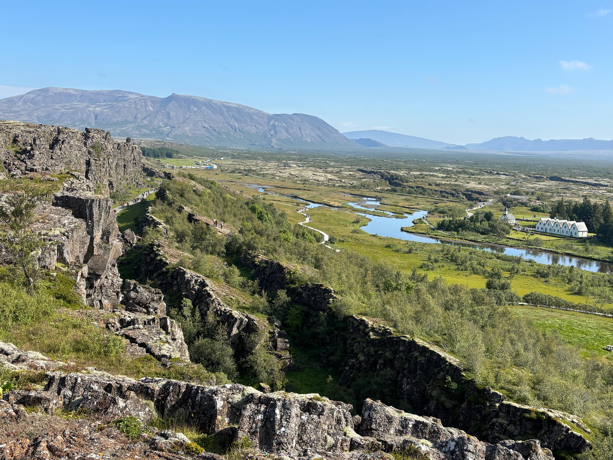
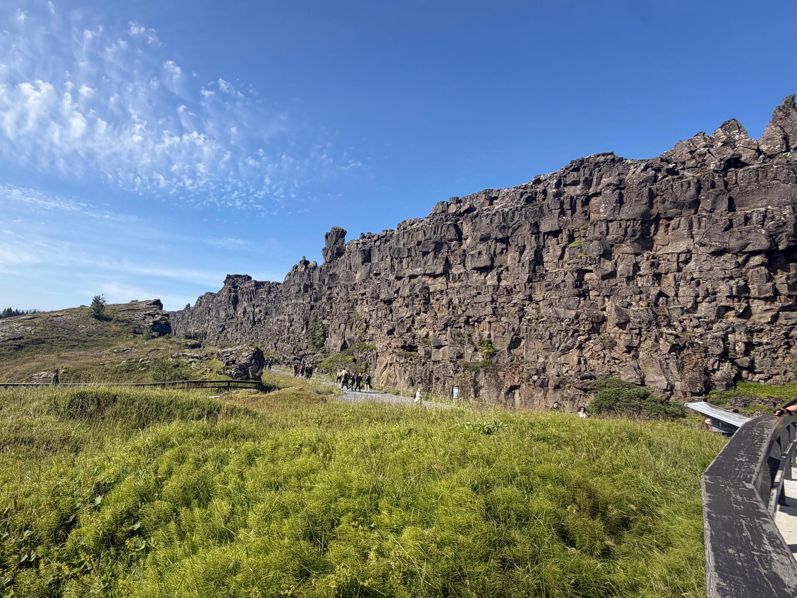
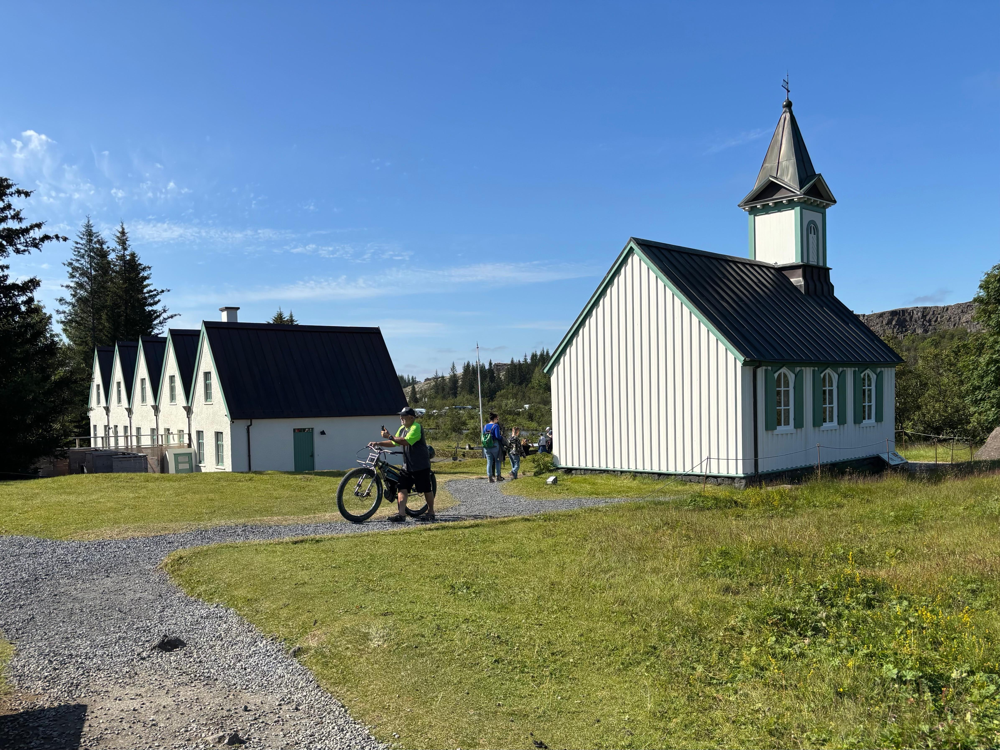
We took a look from the top, walked down with the crowd through the rift, and explored the green plain beneath it. We then noticed a small church and four white houses next to it. After walking around them, Leilani asked a National Park ranger who was sitting there: «Does anybody live here?» The ranger was visibly happy that somebody talked to her, but also visibly frowning at our ignorance. She explained to us the political and historical significance of this site, and that visiting Prime Ministers of other countries still come here to meet the Icelandic one. Leilani was not supposed to be here today, but I had no excuses: I had studied the geology and completely ignored any cultural and historical aspect. Oops! The ranger ended the speech with «Normally when you go visit a place you do research on it first», said with such a gentle tone that it did not even feel like a scold.
The visit at Þingvellir took longer than I thought. That was mostly due, once again, to Leilani's openness: she was curious and fascinated about every little thing. This was a positive thing: I wouldn't have appreciated the place as much without her. But we had a plan to follow, and my high conscientiousness was screaming at the clock. This battle of personalities lasted the whole time, eventually giving rise to a memorable day that wouldn't have been possible with only one of the two ingredients.
Following Hófí's suggestion, we stopped by Efstidalur II, where we had lunch sitting in the grass (I ate the plokkfiskur leftovers), and then finished with the local ice cream. Some kids were jumping on a weird mix of a trampoline and an inflatable slide. I was observing the scene in silence. Leilani instead had already removed her shoes and started to try it out herself. She even convinced me to do the same. Poor kids, they got a little scared when they realized two adults were stealing their playground.
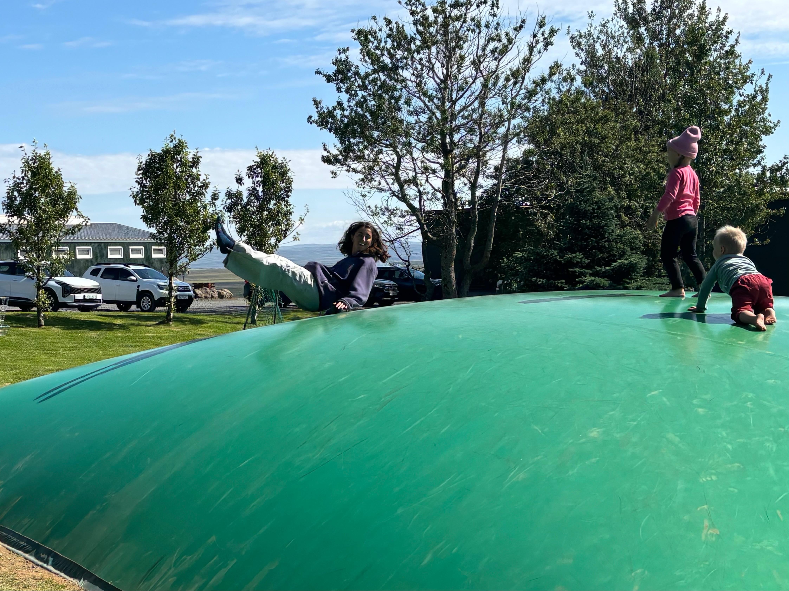
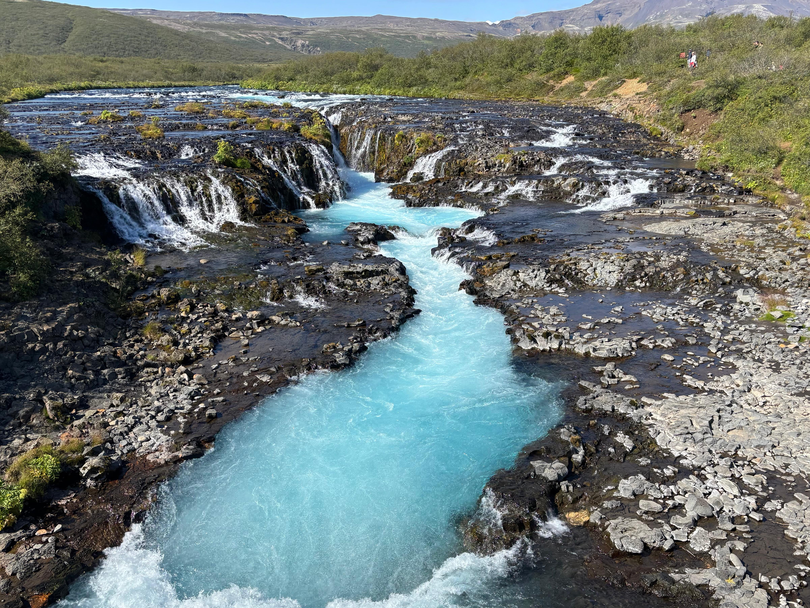
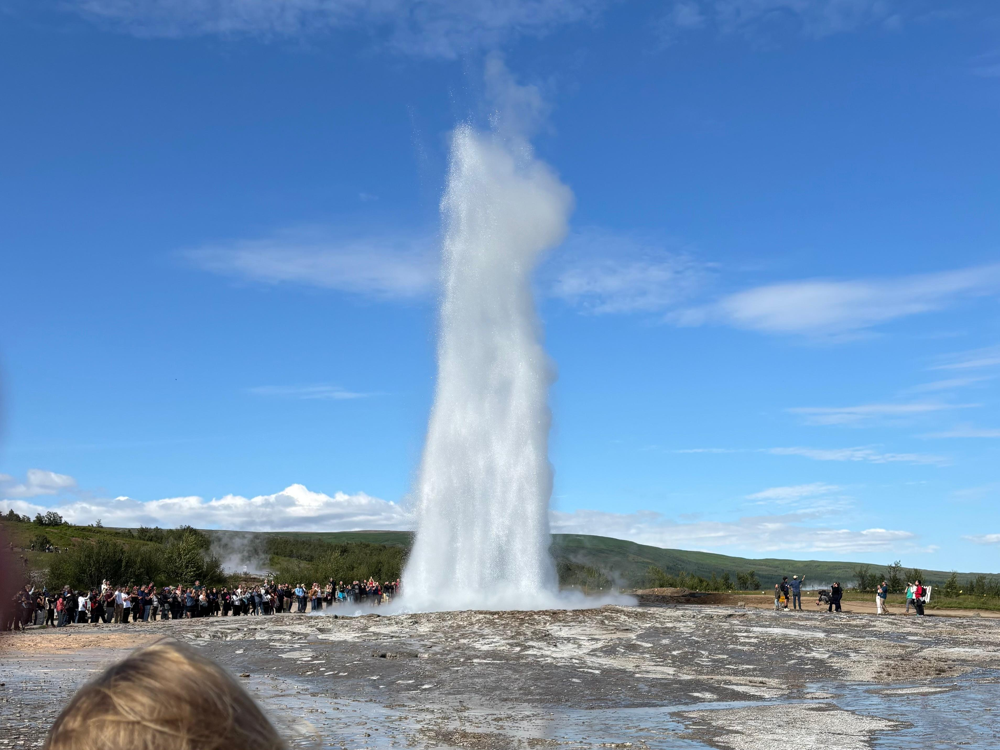
The next stop was Brúarfoss, an improbably blue waterfall. Around this point Leilani and I made a bet on how many waterfalls we would have seen by the end of the day: I said 9 trying to argue that we didn't have a good definition of waterfall, she said 15 saying that when you see a waterfall you just know. Next we reached the two famous geysers, Geysir and Strokkur. Not even the time to walk up to it, and Strokkur surprised us with a big eruption. We remained there to see two more eruptions, then walked around and wondered how much more impressive Geysir must be when it goes off. Before getting back to the car, Leilani wanted to get some coffee. Given my limited 359-day experience with coffee, she encouraged me to try out some new type of it. I was a bit hesitant because I still had never had two coffees within the same day, and was worried it could affect my sleep. But I gave in, and tried a Swiss Mocha. Not bad, I must say.
During the following driving section we remained astonished at the view of the Langjökull glacier, some 30 km away. We reached Gullfoss, an impressively powerful yet crowded waterfall, where we mostly took some pictures and got wet from walking close to it. We then went to Faxafoss: another, smaller waterfall that we actually liked more because there was barely anyone around, and we could get so close as to touch the water. (By this point, the waterfall count was creeping up disturbingly.) A typical dinner stop on the Golden Circle is the Friðheimar tomato greenhouse, which was however closed due to some Icelandic holiday. So we opted for a donut with Salmon at Faxafoss. Finally, our last stop on the Golden Circle was Kerið, a cute volcanic crater lake with reddish walls.
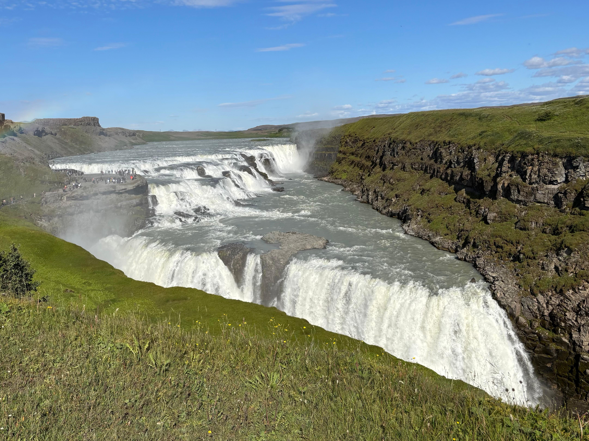
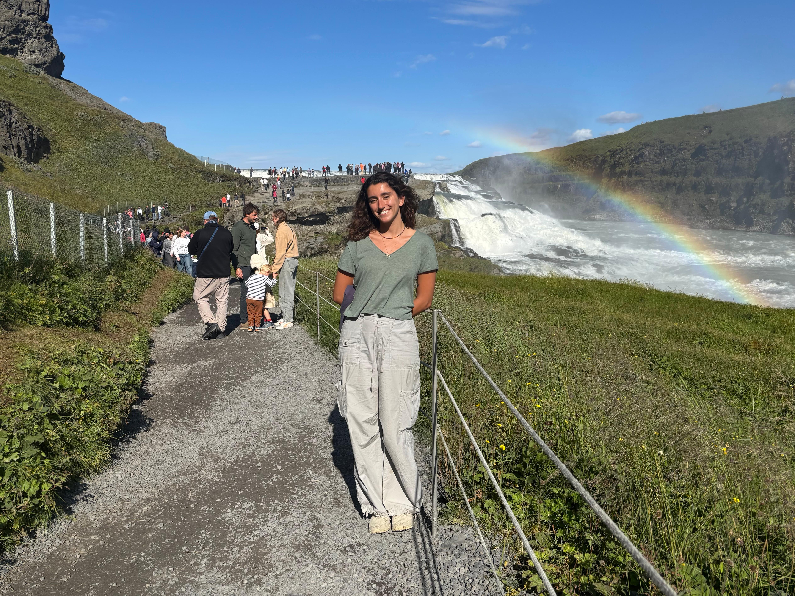
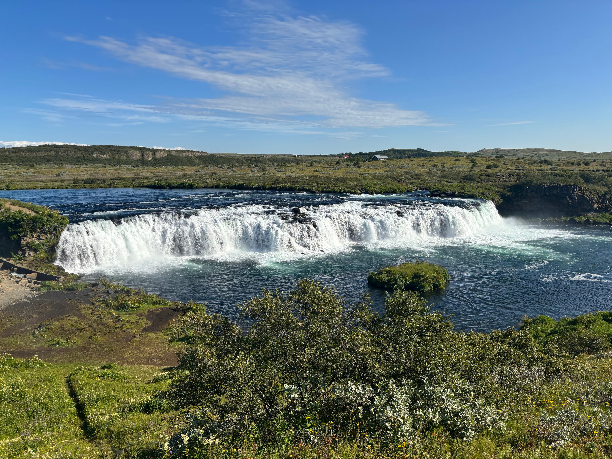
I was worried about the time. For most tourists, Kerið is the last stop on the Golden Circle before heading back to Reykjavík. But I am always a bit more ambitious than the average tourist. And Leilani was clearly desiring to go in some sort of hot tub from the day before. So my plan for the day included Reykjadalur: a 2-hour round-trip hike with geothermal hot springs at the top. We cut Kerið short, but were still about 2 hours late at the start of the Reykjadalur hike, compared to my plan. We packed swimsuit, headlamp, warm clothes, a towel like any good galactic hitchhiker, and started hiking around 18:45.
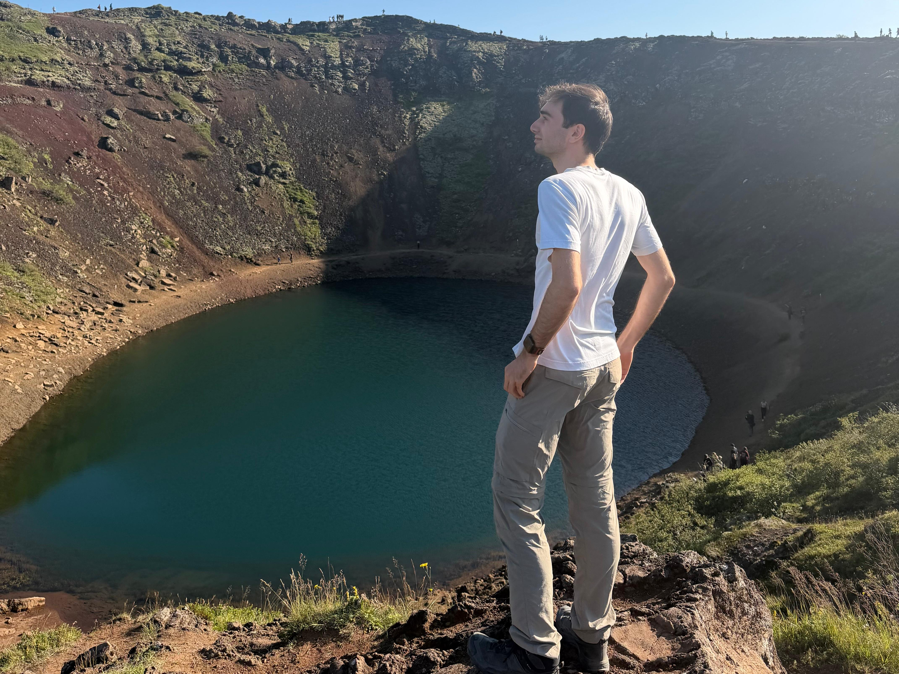
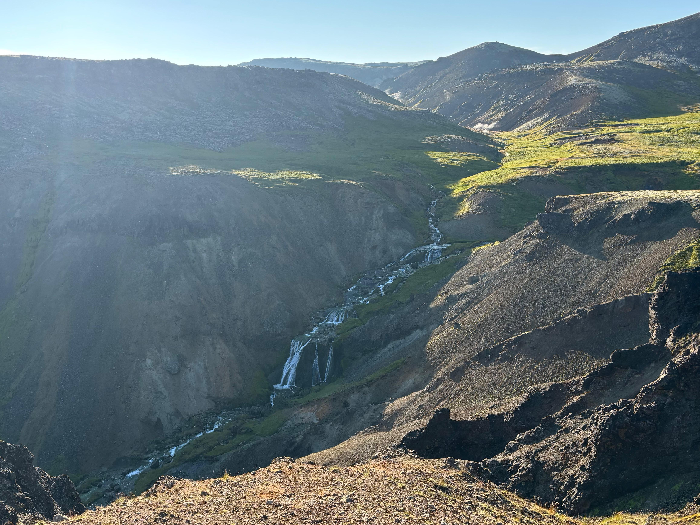
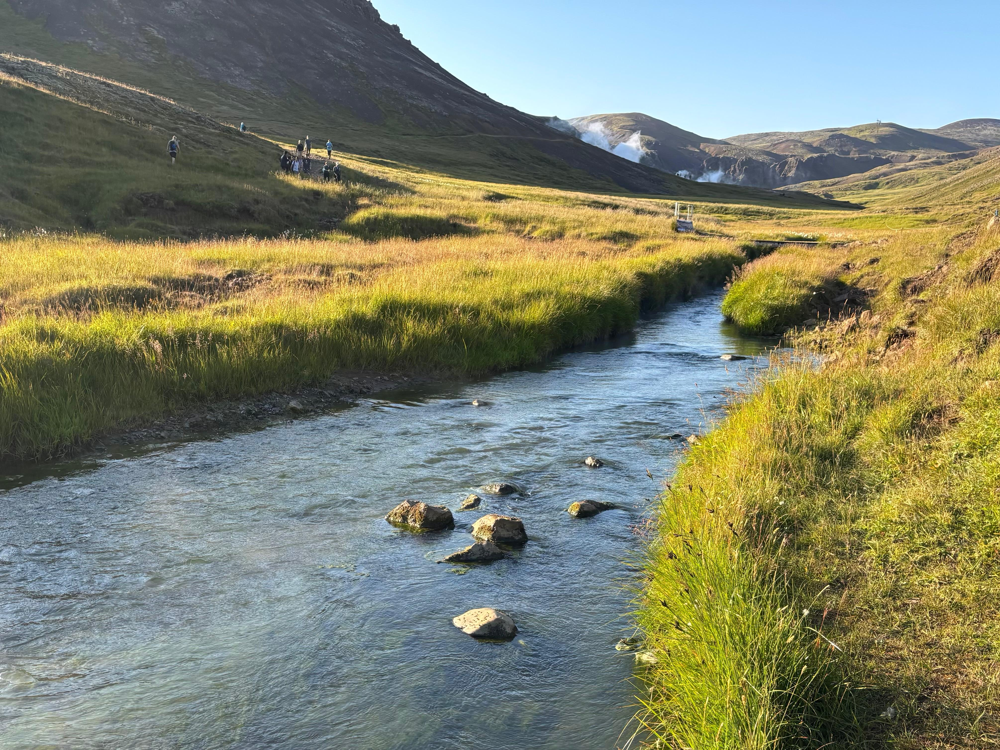
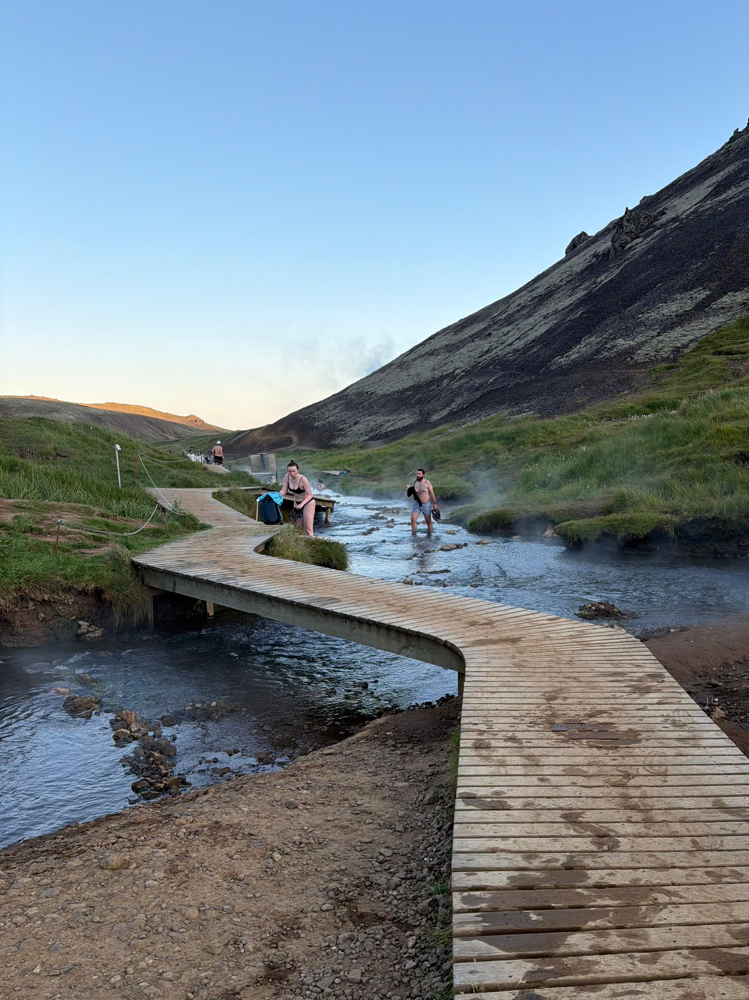
Such a nice hike among smooth green hills! The waterfall count finally hit 13, giving Leilani the definitive win. I could tell though that she was getting tired from the long day, so I tried to keep her energy high by telling her my estimated Big 5 percentiles for her personality. She also guessed mine accurately. Also, I was walking fast to make up time, but my rush was unjustified. Indeed, when we reached the hot springs around 19:50 there was still plenty of light, and the fact that we reached the place later in the day also meant it was not particularly crowded. We changed into our swimsuits and stepped in the water. Oh my! That water was exceedingly hot! I wasn't sure how the other people were fully immersed in it. But I quickly learned that while one side of the river was hot, the other was quite cool, so the key was to go somewhere in the middle.
I had never bathed in hot springs before. In fact, I almost never take baths at all. And I generally do not include these relaxed-kind-of-activities in my holidays. But, somehow, I really enjoyed it. The river was shallow, so one had to lie down to be completely immersed. We remained in there almost 90 minutes. The sun set behind one of the surrounding high hills at some point, making for a very pretty scenery. We also chatted with some of the other people there. One of them was wondering why total solar eclipses are only visible in a small patch of the world. Leilani said «Well, you've got an astrophysicist right here» and left me the job of providing the detailed explanation.
I was glad the hot bath happened much later in the day than anticipated, it was a wonderful conclusion. When we deemed it enough, Leilani and I left the river, got dressed again, hiked down, and drove back to Reykjavík. We had met less than 48 hours before, but we were almost talking like good old friends. As it turns out, humans bind pretty quickly when they spend time together.
But it was already time to say goodbye forever. Thank you, Leilani. Lava-lads 4 life.
Day 3 (August 4): Landmannalaugar
I slept terribly. My Apple Watch recorded only 2h19m of sleep. I guess that Swiss Mocha was a little over my capabilities, after all. But that was not the time to try and make up sleep, as I had new places to explore. I stopped by Krónan to buy hike-friendly food, and left Reykjavík and its steamy surroundings, heading South-East on the ring road. But I did not proceed to the coast straight away. Instead, I turned North-East towards Landmannalaugar, a famous area in the highlands with rhyolite mountains. On a much longer holiday I would have probably given the multi-day Laugavegur trek a shot, but I simply did not have the time to do it. I did however pick an F-road-rated car to reach it on a day trip. So I engaged 4x4 LOCK and continued my adventure on the F225. This was my second time ever driving on a 4x4 road, and it was definitely easier than ascending ʻĀinapō road last year in Hawaiʻi. It did however require me to ford a river, which my Dacia Duster did without any problem. The landscape around the road was breathtaking! I soon learned that I would have to miss out on many photos in Iceland, as some of the best landscapes unfolded while driving alone.
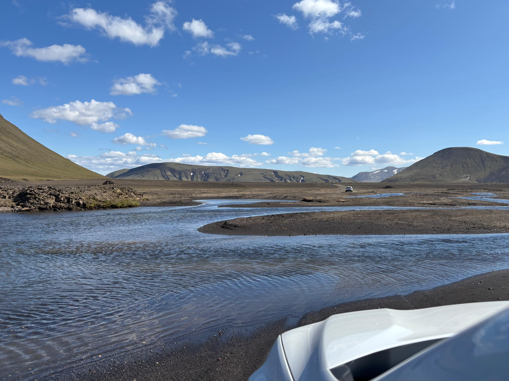
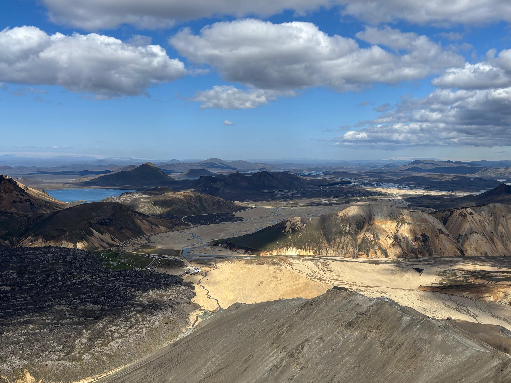
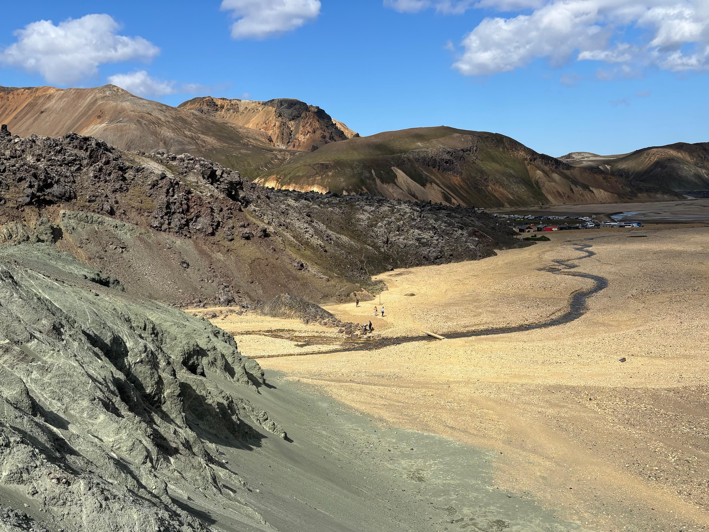
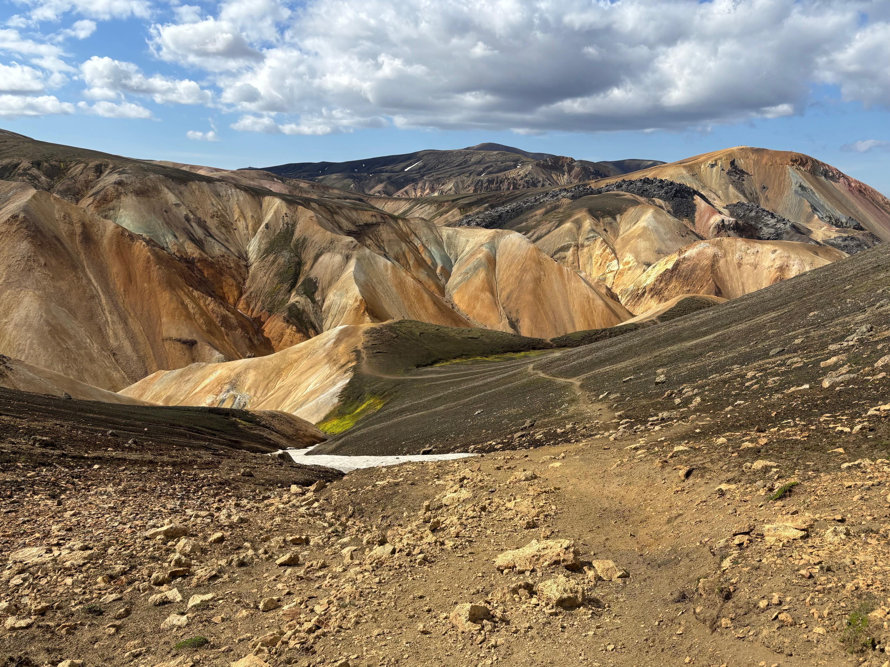
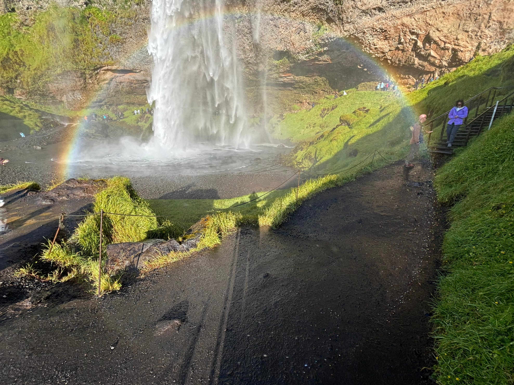
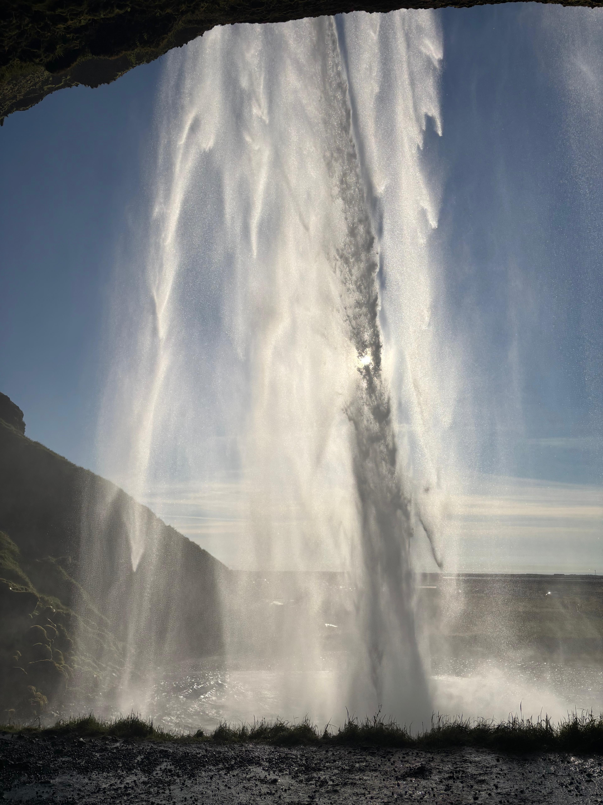
It was yet another perfect-weather day. I had lunch at the Landmannalaugar campsite and then started the Bláhnúkur hike. The colors were simply unreal; I don't think I've ever seen a more colorful soil anywhere else. The blue sky and the occasional white snow fit perfectly in the landscape. I reached the peak of Bláhnúkur, descended on the other side, walked the river valley and the 600-year-old lava field, and looped back to my car after 2h15m. It was an uncomplicated but very beautiful hike. But most importantly, I felt liberated. My injury had deprived me so much of outdoor activities during the summer that I felt so strongly the need for a real hike, up and down a mountain. Fagradalsfjall was a good test; Landmannalaugar was the first true hike.
Next I retraced my steps along F225 and all the way back to the ring road. The drives were beautiful but long and it was already late afternoon. Even though I passed by Hella, next to which I had booked an accommodation, I proceeded East on the ring road so I could save some sightseeing time the following day. I visited the two waterfalls Seljalandsfoss and Gljúfrabúi, which are right next to each other. Both were remarkable, but way too crowded to be enjoyed properly. One thing I particularly do not like is when tourists use landmarks with the sole purpose of taking pictures of themselves there, taking turns at the best spot. Gljúfrabúi was the more beautiful waterfall, hidden in a narrow cave, but I could not even take a picture without other people appearing in the foreground in the frame.
I had slept too little the night before to proceed further on the ring road, so I turned around and settled at Loa's Nest, which took the title as the best accommodation of my trip!
Day 4 (August 5): Glaciers
And yet, I only slept 4 hours. Again. I really struggle to deal with the jet lag. But I had another long day ahead, so after breakfast at Loa's Nest I restarted driving East. I decided to skip the stop at Skógafoss (I figured I wasn't going to be short on waterfalls), so my first destination was Reynisfjara, the famous black sand beach which in February 2026 suffered severe damage from the sea and weather. I was unable to find updated information on its status, so I went to check it out myself. It looked like much of the sand had actually returned! But I was still unable to properly enjoy Reynisfjara. Don't get me wrong, it is certainly a beautiful beach. But the crowd assaulting the basalt columns on the East side made it lose all of its magic. The two kilometers of black beach on the West, devoid of humans and terminating in two sea arches were a much better view.
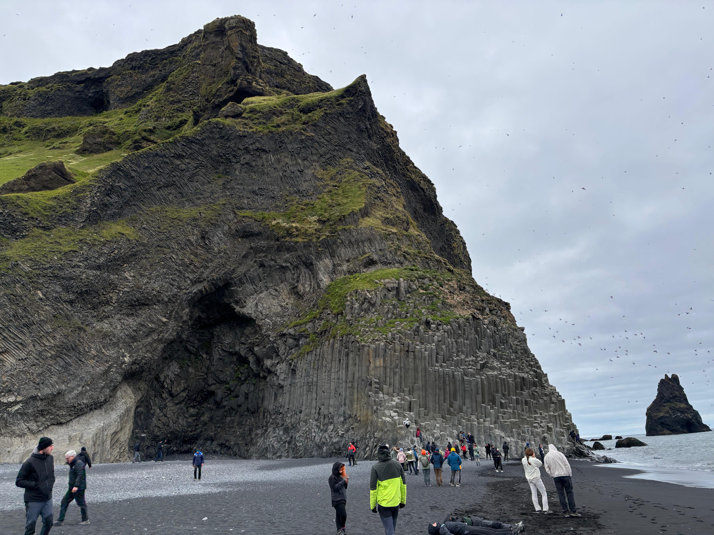
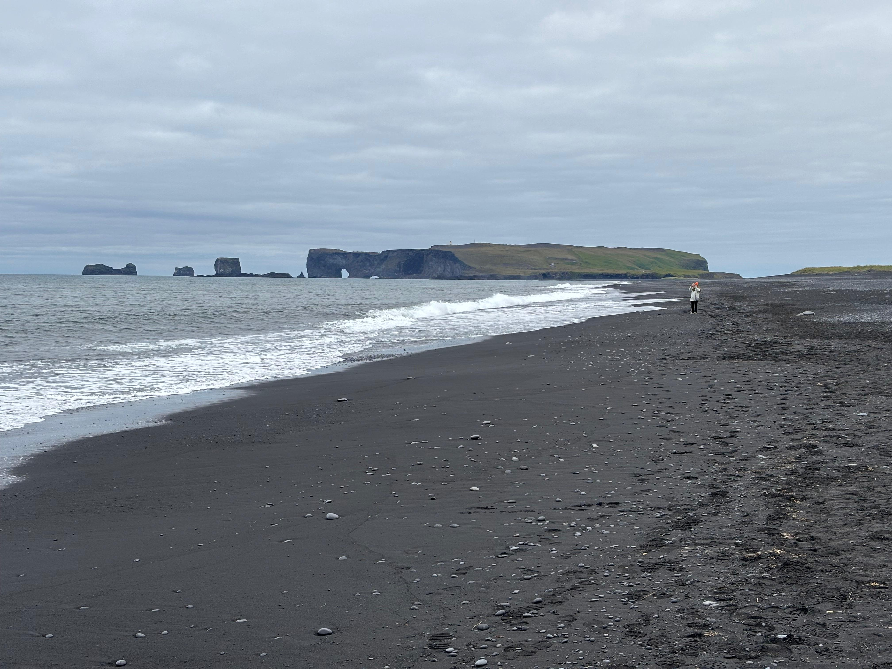
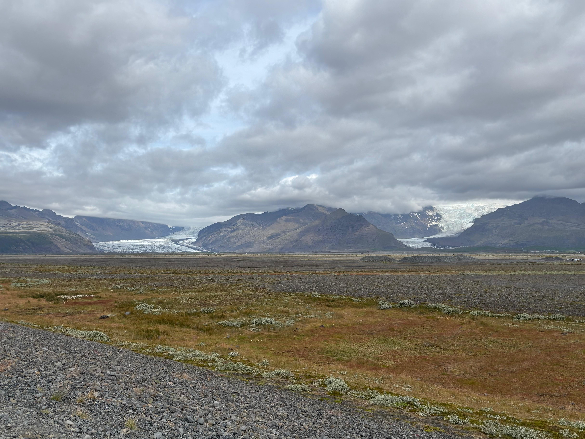
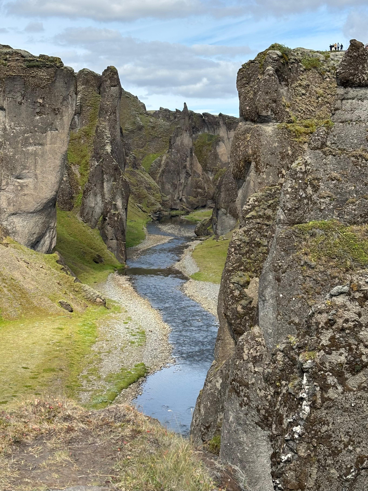
Impressive sights of glacier tongues had started to appear on the North side of the ring road. Next I was aiming for the Fjaðrárgljúfur canyon, but I felt like my lack of sleep was finally starting to hit. So when I parked at Fjaðrárgljúfur at 12:00, I hid on the backseats of my car and managed a tactical 30-minute nap. I then went to see the canyon, but it turned out to be another entry in the beautiful-yet-touristic-sightseeing series, with walking paths and viewing platforms turning the would-be hike into an accessible picture spot.
Oh well. Back to the ring road, and to one of the most spectacular parts of it. The glacier tongues were now more numerous as I was approaching Vatnajökull, while the terrain turned from green hills into the magnificent black-and-turquoise braided rivers. Eventually I did reach one of these tongues up close, parking my car at Skaftafell. I was excited to finally have some actual action: a hike next to a glacier. So I prepared food and gear, and at 14:50 I started going for what I thought would be a 3-hour hike.
It took me 20 minutes to reach Svartifoss, a famous waterfall in a "cathedral" of basaltic columns. As soon as I moved past it, along the S3 trail, all the crowd completely disappeared. Finally back to what I like: just me, the wilderness and the sound of wind. It was as if my mind had taken a refreshing shower. My sleepiness completely disappeared, while my boots and trekking poles marched up Skaftafell, leaving behind me the distant glacial valleys. I saw maybe 5 or 6 people during the whole hike. I am normally a fast hiker, but I reached the midpoint in 2h45m, against the expected 3h for the round trip. I imagined that must have actually been the one-way estimate. But honestly? A longer-than-planned hike was exactly what I needed.
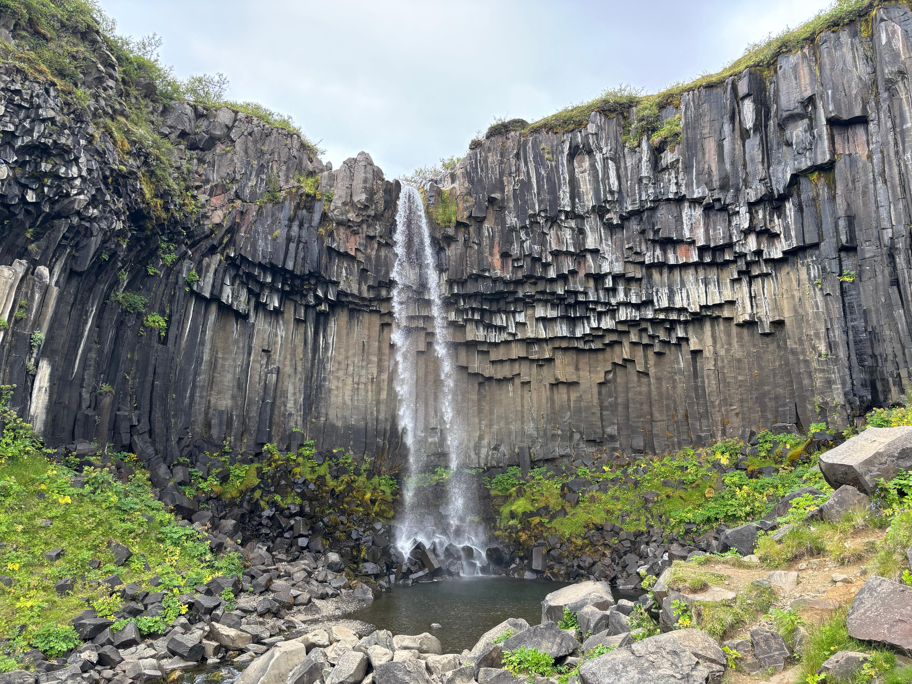
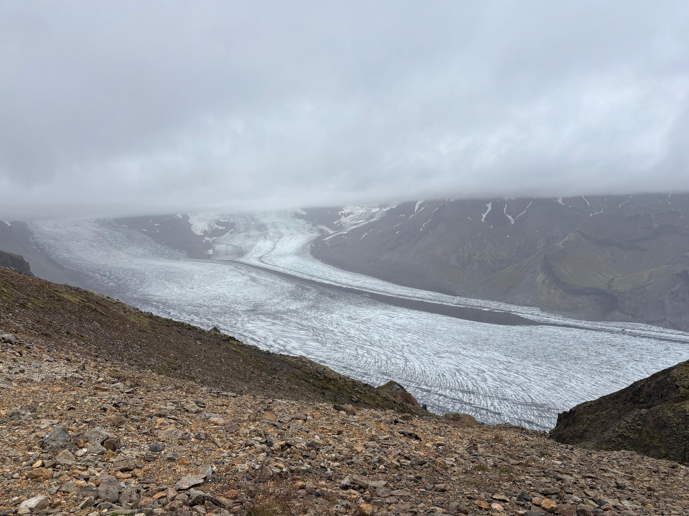
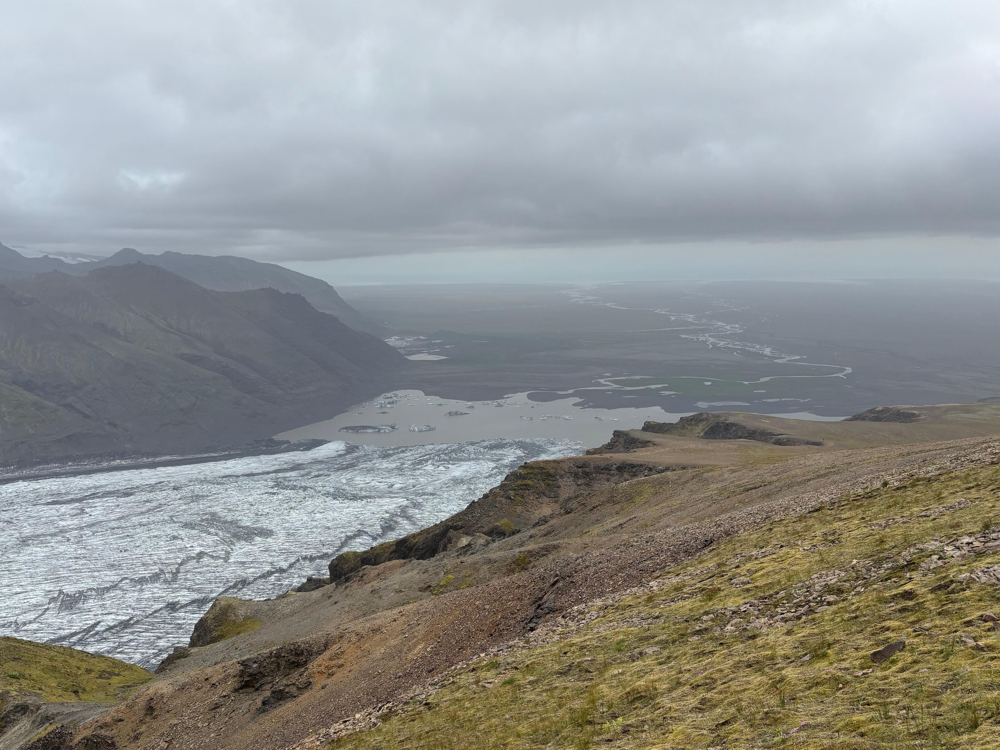
During the first part of the hike the views were nice but not exceptional. I was mostly focusing on enjoying the hunter-gatherer part of the experience. But at the midpoint everything changed: as I walked over the saddle to the East side of Skaftafell, suddenly, the glacier Skaftafellsjökull appeared in full glory. A steep out-and-back trail went to the very top of Skaftafell, but since I was already late and the peak looked immersed in the clouds, I chose to skip it and start the descent on the East side, with views on Skaftafellsjökull, its glacial lake and rivers extending 30 km to the ocean accompanying me the whole time. Perhaps the landscape wasn't as unreal as Landmannalaugar, but this was precisely the kind of hike I needed: up and down a mountain, with a reward at the top. I was so relieved my tibia was cooperating, and so happy to be back at physical activity outdoors. The full hike took 5h10m and it felt like it gave a meaning to my day.
Hófí and her boyfriend Austin had also been touring the South of Iceland around those days. I had been in contact with her, and while I was descending Skaftafell we set up to meet at its base, as they were also passing by it around that time. It was so special to have somebody welcome me right at the end of the hike! And so pleasant to see a familiar face in such an unfamiliar place. When I complained about the large crowds of tourists, they explained that they were dealing with this by having an intentionally shifted schedule (e.g., starting the day at 12:00 and ending at 1:00), which works particularly well in Iceland during the summer due to the late sunsets. We then parted ways, agreeing to meet again at some point later.
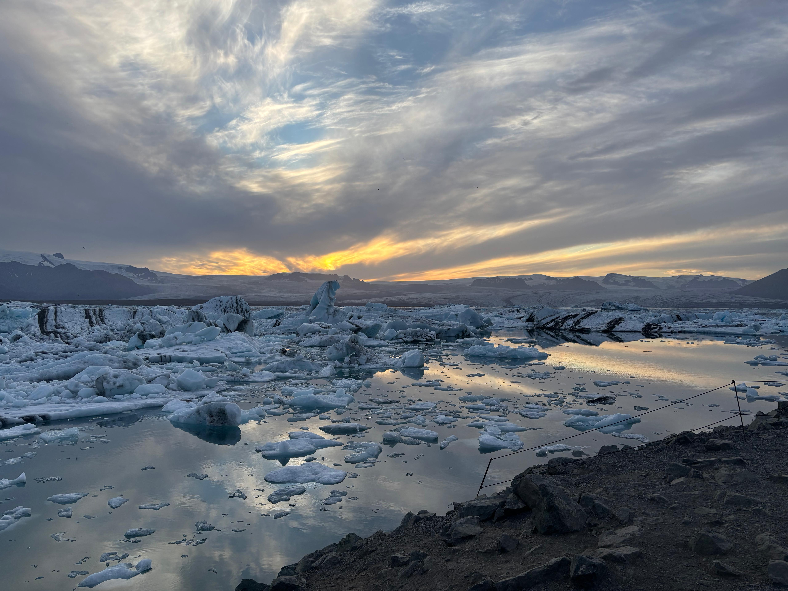
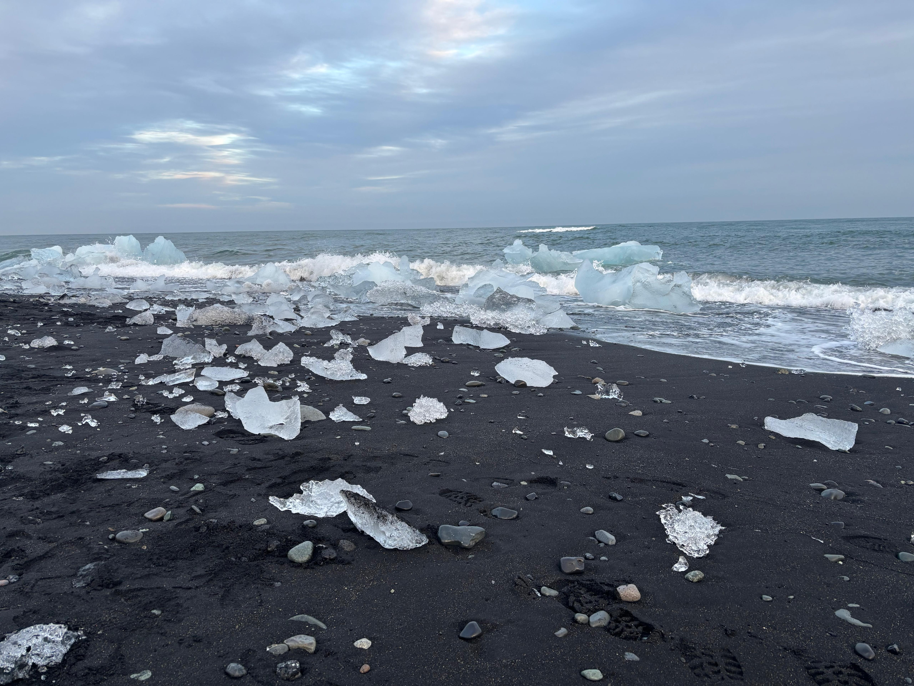
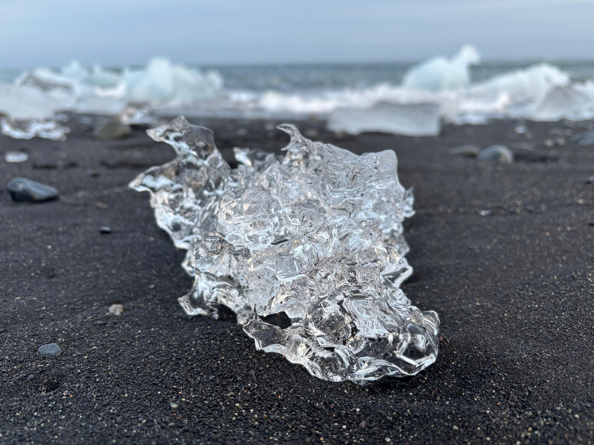
After the Skaftafell hike, I was happy with my day. Yes, I still had a long drive East to my accommodation, and another planned stop on the way, but I was mentally pretty done, with no particular expectations for the Glacier Lagoon Jökulsárlón. But when I arrived, I said out loud «Wait what?!». A lagoon so extremely full of icebergs, of all sorts of colors and shapes, with big glaciers in the background and the sunset light giving warmth to an otherwise freezing sight. This was just an exceptionally beautiful place, a crazy scenery, and certainly a much better sightseeing than the waterfalls, the beach and the canyon.
As I got off the car I immediately realized the temperature here was much colder than elsewhere. So I dressed up and went to admire the silent scene for some time. If it hadn't been such a long and tiring day, I would have certainly spent more time in the area. But as I was about to close the car's door and leave, I heard some strange noises. Then people running. And then I realized, one of the icebergs was turning itself upside down! So I also rushed to the shore and watched the improbable scene of the dark blue ice rotating in place of white ice, launching big waves across the lagoon. That was certainly a very unexpected surprise.
But the long day wasn't quite finished yet, as I stopped by Diamond Beach, right across the mouth of the lagoon, where the ocean washes ashore chunks of ice. That was a sight I had never seen before, not even in pictures. Ice "diamonds" coming from the sea to populate a black beach. Much better than Reynisfjara, and much less crowded, perhaps because it was so late in the day. A day that had started with disappointing sightseeing eventually turned into a delightful ending, thanks to the beauty of this whole area of glaciers South of Vatnajökull. Fourteen hours after leaving Loa's Nest, I reached my new accommodation: a crappy guesthouse this time, but enough to fall asleep as soon as I had the chance to.
Day 5 (August 6): Eastern valleys
It took an intense day like that for me to finally sleep 8 hours. I left at 9:30 and joined Hófí and Austin while they were having breakfast, at an accommodation just 12 km East on the ring road. They invited me to join them in a nearby hot tub, but I declined as I had another long day of driving planned. They eventually returned all the way to Reykjavík at the end of that day, while I headed in the opposite direction.
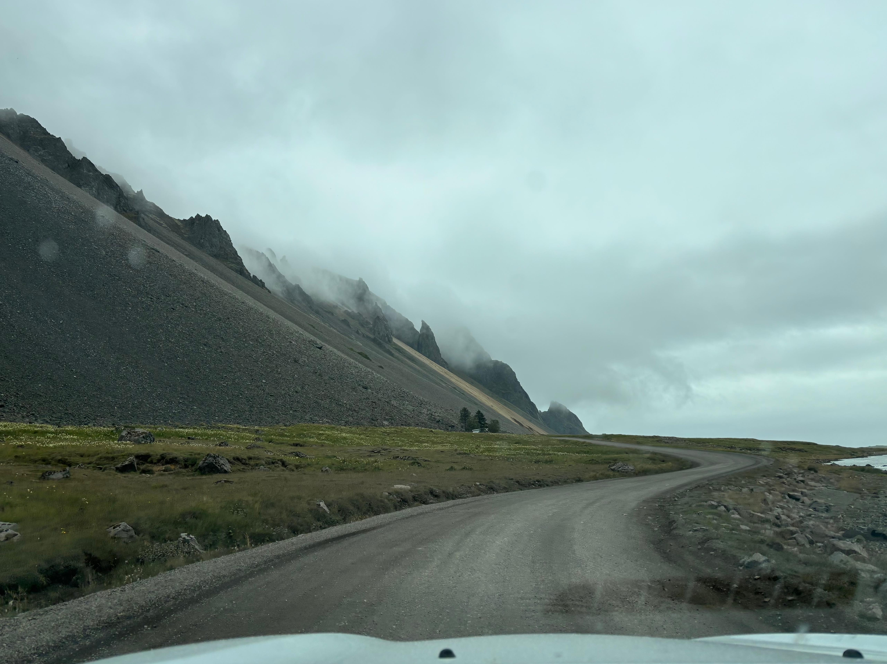
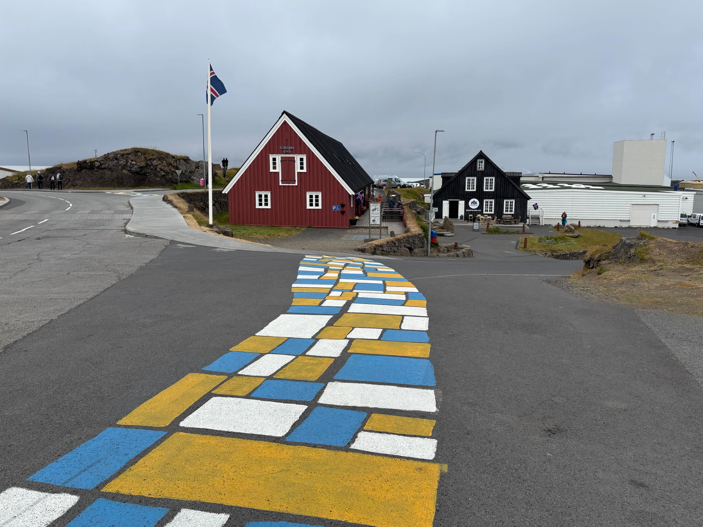
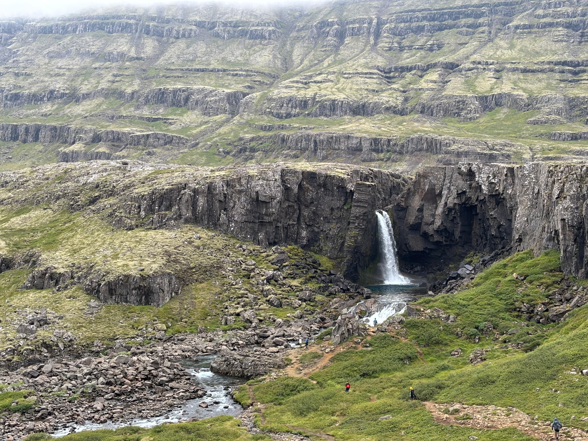
First I considered a stop at Stokksnes, an area with mountain peaks over black sand beaches. But thick low clouds were hindering the views. So I quickly turned around and proceeded along the ring road, winding up cliffs and fjords to my right, and steep mountains to my left. By 12:30 I reached Djúpivogur, a very cute town on the coast. Here I got a local smoked salmon roll for lunch: the best bit of Icelandic cuisine I got to experience during my trip. While waiting for my salmon to be ready, a family noticed the "Mauna Loa" pack of chocolate nuts in my bag, and started asking me questions about Hawaiʻi and whether I had been on its volcanoes. I swear I don't go around shouting it out of nowhere!!
Back at driving and now under some rain, I left the ring road and turned into Öxi, a steep gravel road serving as a shortcut to Egilsstaðir. For the most part, Öxi ascends a valley of a similar kind as the ones I had seen so far, with rocky gorges and waterfalls all around. But after passing a saddle, the road briefly descends into a surprisingly new landscape, with the first sight of tall trees (Pinaceae) I had had since stepping foot in Iceland. This almost looked like Scandinavia. I stopped in Egilsstaðir to buy food supplies, and proceeded North-West for some more time.
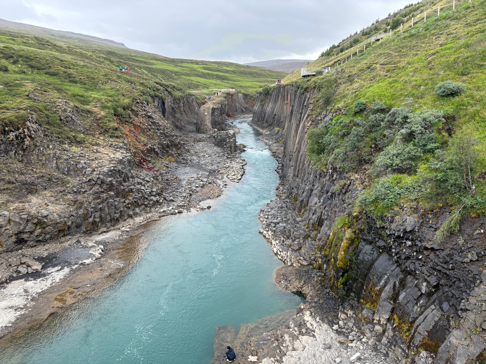
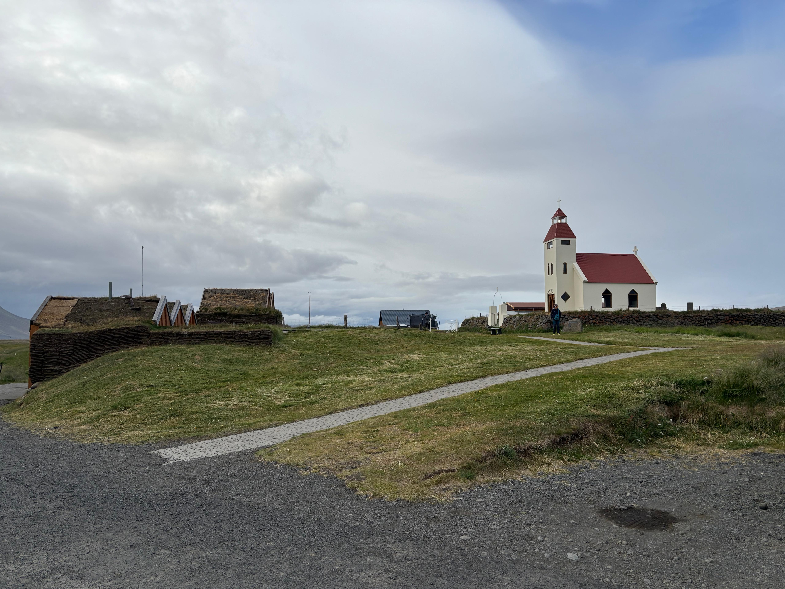
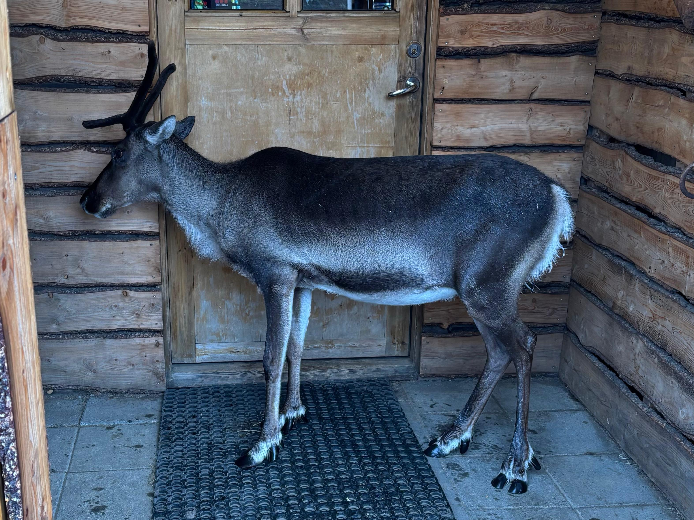
Here I went to the Stuðlagil canyon, an impressive gorge with the now familiar basaltic columns all around its walls, and incredibly blue water. I approached it from the West side, the "easier" one, featuring the usual setup of paid parking, walking paths, and viewing platforms. The East side has a 5 km walk and allows for a slightly better access to the water level, but I figured it wasn't worth my time when I still had a lot of driving ahead.
Under a now heavy rainfall, I returned to the ring road and followed it through a black desert of the kind I so much love. My destination was Möðrudalur: barely a village, mostly just a hostel and a church, serving as the launch pad for those who want to venture deep in the highlands, specifically to the Askja area. Of course I was one of those. After getting out of my car and collecting my bags, I raised my eyes and found 5 people taking pictures of me. I was about to say «What the...» when I realized a reindeer was sniffing my luggage behind my back. Apparently they keep him as a pet around Möðrudalur.
The following day I was planning to drive the F-roads to Askja and camp there. Unfortunately, the weather was forecast to become worse and worse, with freezing temperatures and possibly snow up there. I weighed the risks and decided to go anyway. I was disappointed, but I cared about Askja. And a tough experience is better than no experience.
Day 6 (August 7): Askja
After waking up, I went to ask the expert in Möðrudalur for information about the F-roads. I was initially planning to go to Askja via F905 and F910, and leave it via F88 to reach Mývatn faster. But he told me the river crossing on F88 was too dangerous for my Dacia Duster, especially due to the ongoing rain, so I'd better retrace my steps when leaving.
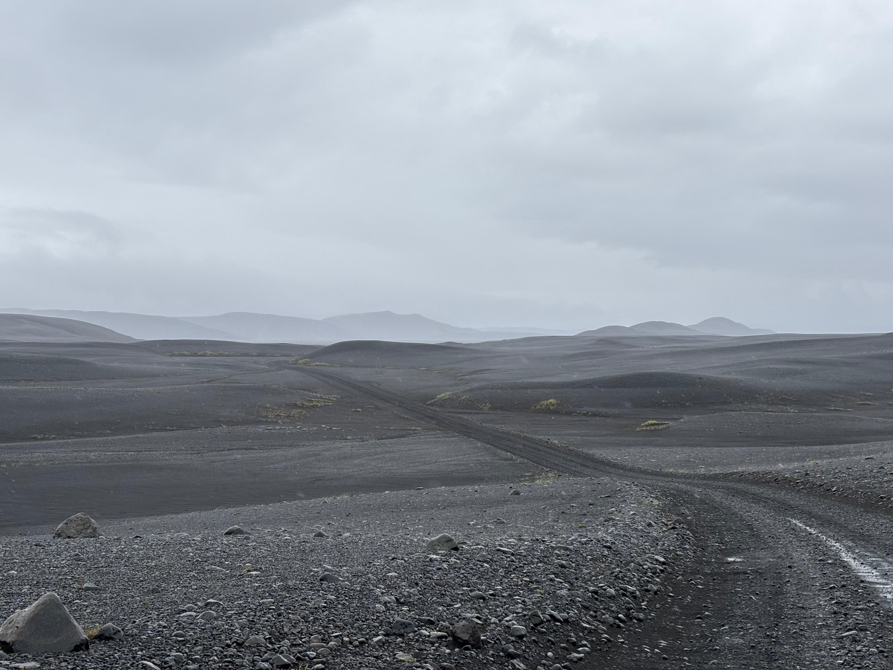
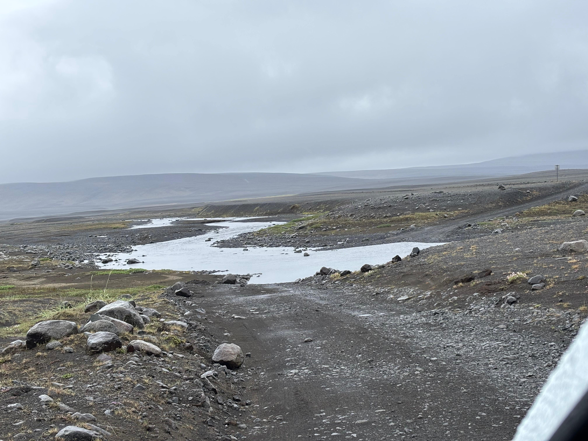
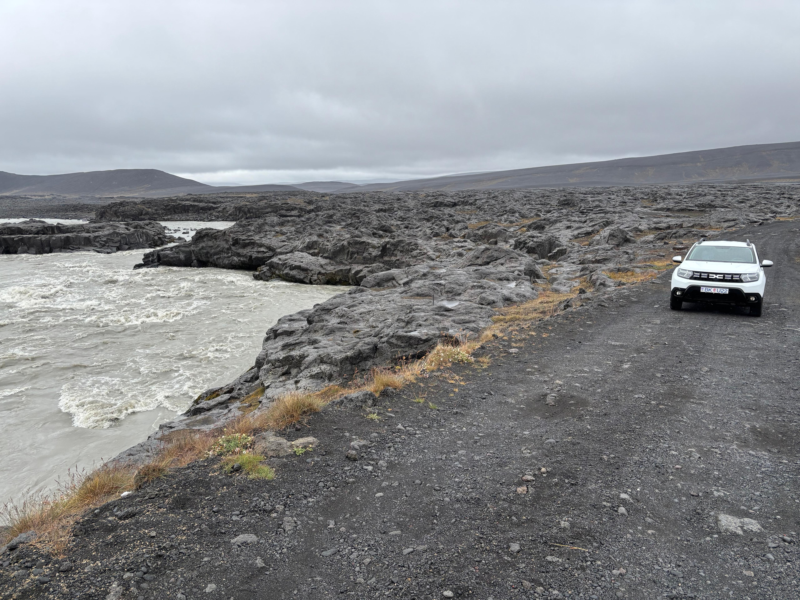
So I started my adventure in the highlands, driving 2h40m towards Askja. The landscape was extraterrestrial. No doubt why Apollo astronauts came here to train. I put Test Shot Starfish's "Music for Space" on the car's speakers and observed the environment as I moved through it. Initially a black desert, as far as the eyes could see. Then glacial rivers, some small enough to be forded, others too violent and requiring a bridge. Rocky terrain then replaced the volcanic dust, and finally a layer of yellow-golden tephra started to appear, covering the black soil more and more as I approached Askja. I finally arrived at Dreki, a campsite with a few huts and visitors and National Park rangers. Honestly, its facilities were much better than I anticipated, as they included toilets, a campsite reception selling snacks, and even the possibility of paying for a night in the hut. The weather was quite terrible, with cold drizzling rain and strong winds, and a park ranger informed me that up at Askja it was even worse.
But that was going to be my only day at Askja, so I tried to make the best out of it. After a brief hike into the Drekagil gorge, I got back in the car, drove 10 km uphill and reached the Vikraborgir Car Park, where I started hiking towards the Askja caldera. Unfortunately, the weather was unbearable, my supposedly waterproof equipment started to fail, and the fog was so thick that I could not appreciate anything in the landscape. A few other visitors were just leaving the area while I walked 2.5 km towards the geothermal lake Víti. The first part of the hike was on familiar black lava, but the terrain unexpectedly turned into a muddy light brown soil as I got closer to Víti. I am unsure whether this is the result of geothermal activity chemically breaking down the rocks. Anyway, even on flat ground, the mud was extremely slippery, and my boots were constantly getting sucked off. When I reached Víti, weather conditions were so bad that I decided to not attempt the steep descent to its surface: it felt rather dangerous to do it alone, with such a high chance of slipping, and in low visibility. I figured I had to be satisfied with the foggy views of its turquoise water. I walked around the rim of Víti, but the big Öskjuvatn lake was almost completely hidden by the fog.
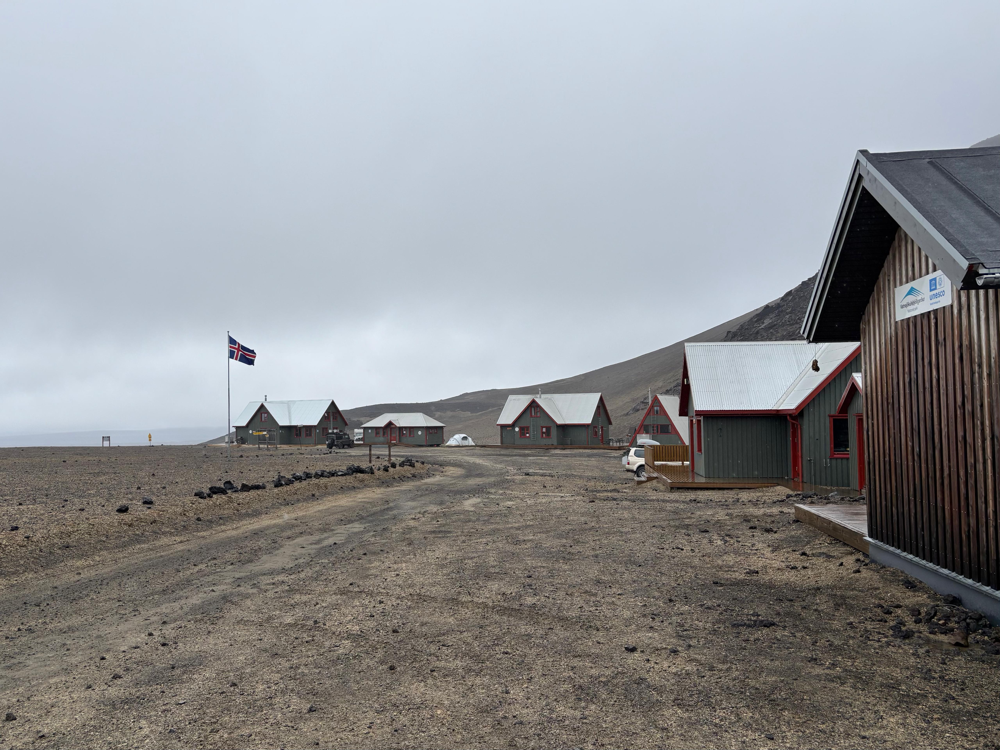
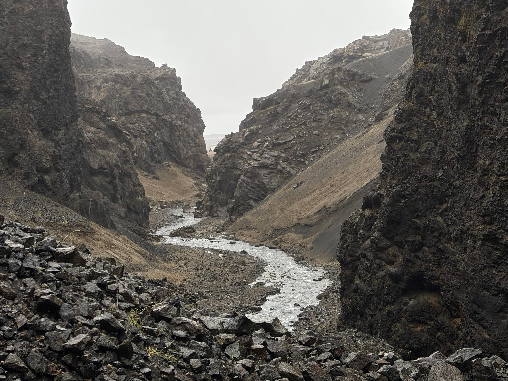
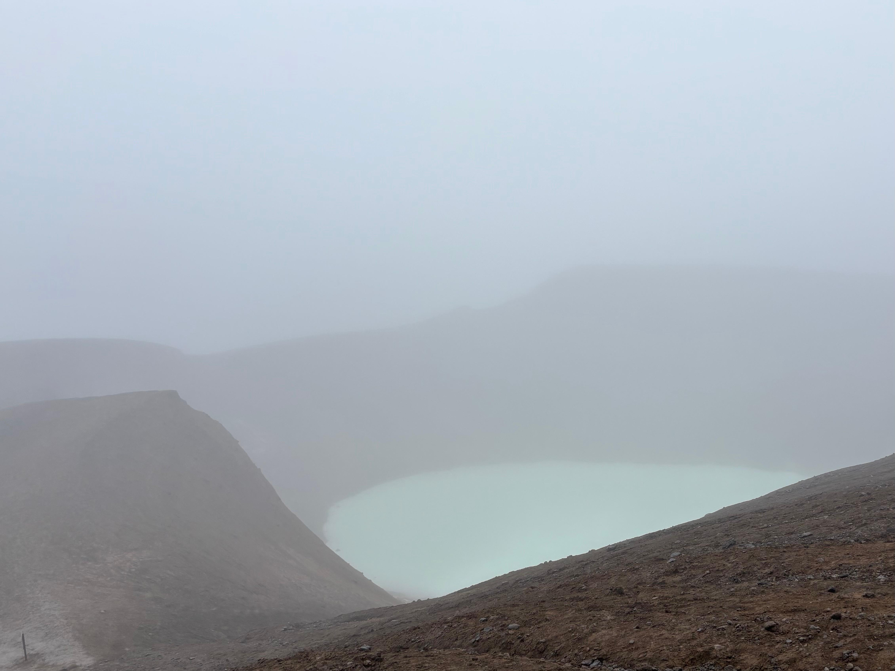
This was a bit of a disappointment, as I think Askja could have been my favorite place in Iceland if I had actually got the chance to see it and explore it. Sometimes it just isn't your day. Now completely wet, and very cold, I went back to Dreki, where I spent the late afternoon in the campsite reception, trying to warm myself up. There were a couple of families there, even with small kids—I guess it's a remote area but (weather permitting) friendly enough for an adventurous family.
After eating my dinner, I went out again in the wind and rain at 2 °C. I unfolded the "bed" in my car, moved all the luggage and gear to the front seats, and got into my sleeping bag. Even with heavy clothes on, it took me a long time to get to a comfortable temperature, but eventually I fell asleep under the sound of rain hitting the car.
Day 7 (August 8): Geothermal power
When I woke up, there were snow crystals all around my car's windows. I was well-insulated while sleeping (except for my very cold nose), but getting out of the sleeping bag, out of the car, and rearranging the interior of my Dacia under that weather was tough. The way out of Askja was smooth, as I was becoming more familiar with getting through F-roads. I looked confident enough that some people stopped at a river fording, watched me do it, and then asked me for advice on how to do it safely.
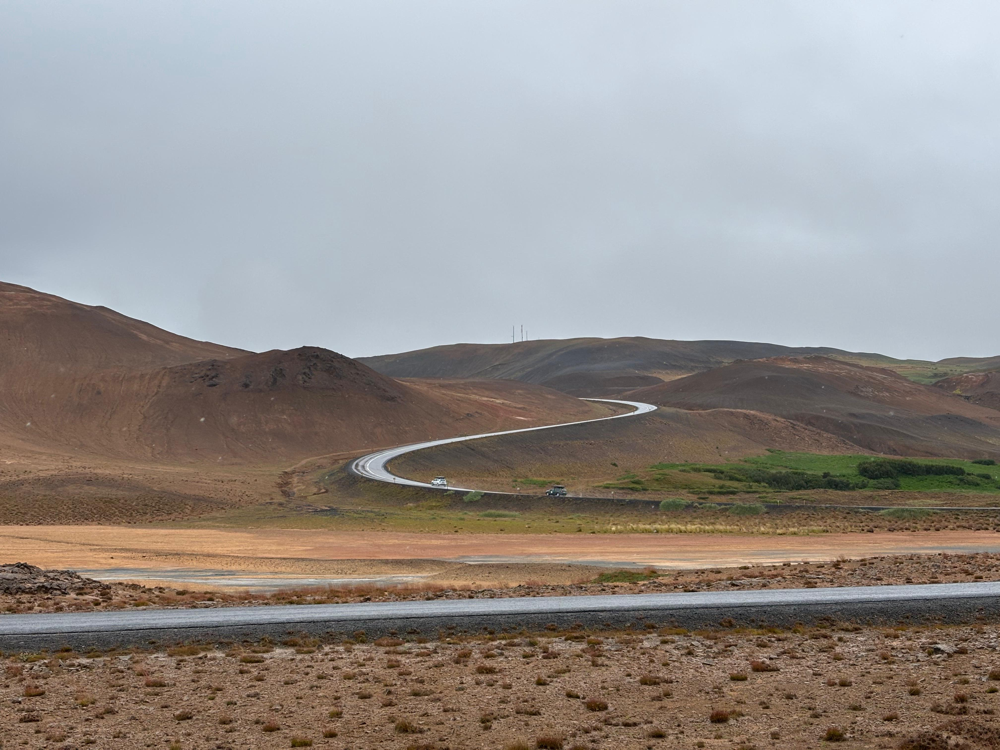
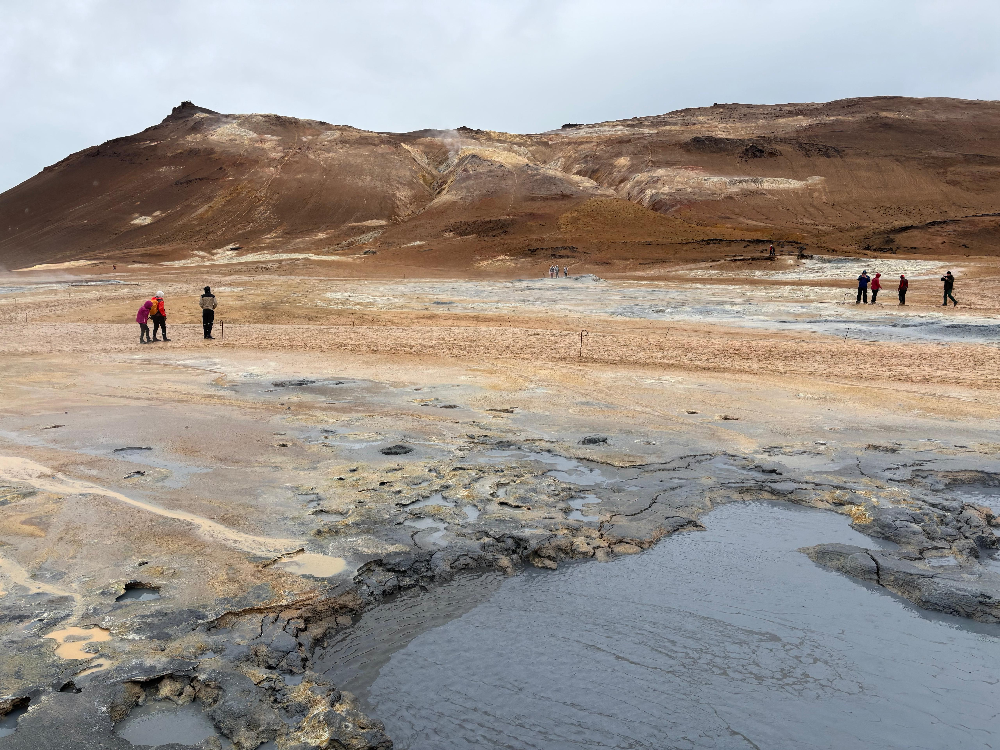
Proceeding West on the ring road, I arrived at Hverir, an active geothermal area, similar to Krýsuvík from day 1 but much bigger. I walked around the area (covered in brown mud similar to Víti at Askja), peeking in the boiling mud pots. The steam plumes were supposed to be enormous, but the strong wind was funneling them close to the ground, so much that positioning myself leeward from a vent was giving significant relief from the cold.
Once again completely wet from the rain, I moved to the other side of the ring road, towards the Krafla area. Passing by the Krafla Geothermal Power Plant was quite the sight, with steam and enormous tubes warping around the road. I briefly stopped by the green Krafla Víti, but did not try to walk around its rim in that weather. Instead, I did venture to the nearby Leirhnjúkur and its 1984 lava flow. So Hawaiian, with the trail crossing a pāhoehoe field and then going on ʻaʻā! But the similarities ended as soon as the rhyolite hills and the geothermal plumes and ponds appeared from the fog.
The whole area (Hverir, Krafla, Leirhnjúkur) was very fascinating and much more volcanically active than the rest of Iceland, except for Reykjanes. It was a throwback to day 1, but without Leilani around and in a much worse weather. I spent quite some time looking at the lava fields at Leirhnjúkur, but at some point I figured I really needed a warm shower and dry clothes. So I drove to my guesthouse past Mývatn, fulfilled that desire, had a warm dinner (the first since day 1) and fell asleep.
Day 8 (August 9): Diamond Circle
Unfortunately, when I woke up I found out that my shoes, jacket, hat, and gloves hadn't dried out. Alas. I only had to endure one more day of bad weather. After driving around the South side of the Mývatn basin, I reached the attraction in the Hverir area I had skipped the day before: Hverfjall. A black tephra cone, 1 km in diameter, resulting from a phreatomagmatic eruption 2500 years ago. I waited out a rain shower in the car and then ventured on the short hike. That was pretty cool! The 1-hour loop on the rim of the cone delivers very nice views on the whole Mývatn area and the white plumes of Hverir. Next I visited the nearby thermal pond Grjótagjá. What a nice surprise! Visitors can descend a few meters into a lava fissure, encountering this small place with magical atmosphere. The cave is quiet and mostly dark, with some light rays penetrating from the openings of the lava fissure. The water of Grjótagjá is intensely blue yet transparent, with steam emanating from it. I touched the water and found it to be quite hot indeed. I spent 15 pleasant minutes inside, only bothered by a few noisy people that didn't seem to understand the vibe of the place.
Back on the road, I drove towards Dettifoss, one of the most powerful waterfalls in Europe. The waterfall itself, while certainly impressive, had the same touristic-sightseeing kind of setup I described for several places in South Iceland. And to be honest, the most memorable thing of my visit there was the otherworldly landscape the waterfall sits in, full of basaltic canyons of all shapes and sizes. Too bad everybody just seemed to care about taking a picture of themselves with the falling water in the background.

Driving 20 minutes down the Jökulsá á Fjöllum river, I reached Hljóðaklettar. I was not too sure what to expect from this place, but I was, once again, positively surprised by the geology of North-East Iceland. There was an unreal number of improbable basaltic formations all around the river. Most remarkably, several honeycomb arrays of basalt columns created vertical walls as well as caves. One cave in particular was particularly large and impressive—I sat for some time in the back of it, shielding myself from the weather and listening to the drops of water falling from the rocky roof. The whole area was also rather devoid of tourists. Hljóðaklettar is very underrated!
Farther downstream, I visited Ásbyrgi, a large horseshoe canyon with much richer vegetation than pretty much any other place I had seen by that point. Once again, quite an impressive place. I drove in between the vertical walls of the canyon, reaching the parking lot at the very heart of it. From there, I walked to the very edge of the horseshoe, to a place known as Botnstjörn: a lovely, quiet and green pond, surrounded by curved rock walls giving cozy vibes.
To conclude the Diamond Circle, I drove along the North coast, enjoying great views on the Greenland Sea (finally with a glimpse of improving weather), arriving at Húsavík about one hour later. I was not particularly interested in the town itself. Instead, I headed straight to a very specific destination: the Exploration Museum, which I knew for containing items related to the training of Apollo astronauts in Iceland. I was initially confused about where the "museum" was. Eventually I found out I first had to go in a quite weird bar, which sold the tickets, and let me proceed to the exhibition. The museum was very small and, to my surprise, half of it was about... Eurovision. Not really sure why. Anyway, the part about space exploration was nice but nothing exceptional. Still enough to give me the usual chills and misty eyes that I get with anything related to space exploration. The most notable original item was the hammer used by Neil Armstrong during training.
Almost fully closing the circle, I went back on the ring road and reached my new accommodation. North-East Iceland, including Askja, the Mývatn area and the Diamond Circle, had really impressed me. It's both a pity and a blessing that it isn't as well-known as the attractions in the South. My only regret was that my visit in the area coincided with the worst weather I encountered during the trip.
Day 9 (August 10): Akureyri and Vatnsnes
I took that morning easy. I was not planning on any big exploration, as I had just finished seeing the most attractive areas—this was meant to be a day of transition into the eclipse window, for which I would need to move back to the West side of the country. Good weather was finally back, which meant I could wear light clothes and normal shoes, leaving all the wet stuff dry.
After leaving the hotel I drove West to the nearby Akureyri, where I enjoyed a delightful city walk for most of the morning. I explored the Botanical Garden (which unfortunately did not have any big trees, given the latitude...), the ups and downs of the city, and had lunch at a restaurant by the harbor, where two cruise ships were stationed.
Being in a relatively large town was also convenient because I had to buy stocks of essentials (like food and water) for my days of camping around the eclipse. So I filled two bags with caloric food and drove West 2h30m to the Vatnsnes peninsula.
Here I stopped twice. First at Hvítserkur, a remarkable sea stack with two arches and hundreds of seagulls. I descended down to the quiet beach beneath the viewpoint and enjoyed a really nice walk on the black beach, by a surprisingly calm sea. Back to the car, I drove all around the coast of the peninsula to Illugastaðir, a bay with a well-known seal colony. There were two seals, one of which was behaving really weirdly, producing loud noises with its nose underwater, and repeatedly slapping the sea surface with its paw. It almost looked like it was performing for the tourists!
Finally being late afternoon, I drove to the final accommodation before the upcoming nights of camping for the eclipse: Brekkulækur Guesthouse, which took the silver medal of the accommodations. This was actually the moment of a crucial decision. I had picked Brekkulækur due to its convenient location as a launchpad towards different possible destinations in the path of totality in the West: the Westfjords, Snæfellsnes, or the Reykjavík/Reykjanes area in a pinch. Which of these I would be driving to depended on the weather forecast. Of course I had been monitoring the situation the previous days—now I studied it exhaustively. The forecast was not encouraging, but the decision was easy. Iceland was going to be completely overcast on Wednesday; however, high clouds have little effect on viewing the sun, while middle and low clouds prevent it. Out of all locations, only the Westfjords had a chance of breaks in the middle and low clouds. Going to the Westfjords also meant I would have the chance to see Snæfellsnes on the way back to Reykjavík, while the opposite was not feasible. I decided to postpone to the following day (and thus to a more accurate forecast) the decision about the specific location in the Westfjords.
Having settled the eclipse decision, I considered doing something I always do in remote places: stargazing. This had been in my mind the whole trip (especially due to the coincidence of the Perseids peak with the eclipse), together with the chance of seeing the aurora, whose forecast I had been peeking at every now and then. For various reasons (weather, or being in areas with light pollution), I was not able to look at the night sky the previous days. But now that I had the chance, I realized I had severely underestimated how late the Icelandic sunset is even mid-August, and especially how bright the sky remains for hours after that. Even deep in the night, the sky was not going to reach astronomical night. Disappointed, but hopeful for the upcoming eclipse, I enjoyed my last night in a bed before the adventure in the Westfjords.
Day 10 (August 11): Westfjords
After a nice breakfast at Brekkulækur, I checked again the weather forecast. The area of the Westfjords with the highest chance of breaks in middle and low clouds had shifted: it was no longer the extreme West tip, but the North-West, slightly West of Ísafjörður. That's where I aimed, to a campsite in a small village called Flateyri. The drive across the Westfjords was long but very, very beautiful. The area was quite different, and geologically much older, than any other landscape seen by that point. The road wound up and down the mountains, all along the coast of the fjords, offering complete views of the landscape of countless U-shaped glacial valleys with barely any trees. Towards the end of the drive I took a wrong turn into a long 1-lane tunnel, but was rewarded with a magnificent view of Ísafjörður, only spoiled by its three cruise ships.
I was worried about traffic, overfull campsites, shortage of fuel and food. None of that happened. In fact, when I arrived at the campsite in Flateyri, mid afternoon, there were only four campers, populated by hippies. There was a gas pump right next to it, which included a shop of all sorts of food. Oh well, I had overprepared.
Then I got to know Flateyri, that tiny fishermen's village that I will never forget, having elected it to be my base camp for my second total solar eclipse. Flateyri was very cute. Two streets, one church, and gigantic avalanche barriers that protect them from the dangers of the mountains around. I also looked around to get familiar with the geography. The sun at 17:43 (the time of the eclipse the following day) was not low enough to be blocked by the mountains. But I thought it would still be a good idea to be on a higher ground. Near the campsite I found a map with the nearby hiking trails, one of which climbing the Seljanef peak, right above Flateyri's fjord Önundarfjörður. It immediately looked like I had gotten my answer.
Later in the evening, more cars and campers arrived at the campsite, but still nowhere enough to make it overfull. The eclipse tension was building up. The chance of cloud breaks seemed high at 17:00 and low at 18:00. At some point I decided it was pointless to keep checking the forecast, because I had made my decision and was happy with it. So I set up the car in the sleep-in-back configuration, rolled out my Hawaiian sleeping bag and dreamed of a black sun.
Day 11 (August 12): Purple darkness
It really is undeserved. Not that total solar eclipses happen at all (contrary to what is usually stated)—that's pretty common on other planets. But that, on any given part of the Earth, they happen so rarely. That the umbra is so small, that almost only the photosphere gets covered. Because we already know what night is like. What we don't know, and is so shocking to experience, is daytime with a perfect cosmic coronagraph. The rarity and briefness of total solar eclipses on Earth are precisely the reasons they look like nothing else we can ever experience.
I would have a lot to say about solar eclipses. But my experience in Iceland was not blessed with clear skies, so I prefer to leave a retelling of the mix of science and awe caused by the optical phenomena around totality for a future diary. Instead, my Icelandic eclipse was memorable in a less standard way.
During the morning of August 12 I did nothing but carefully study the cloud pattern forecasts and evaluate my options. The only competitor to the Seljanef hike was driving to some other area of North-Western Westfjords, but it didn't look like I could have any serious chance of outrunning the clouds or find a location with a considerably better forecast. So I made my decision: with a likely cloudy sky, a scenic location would be the better choice. Around lunch time I walked out of Flateyri and onto the Seljanef trail, hiking really really slowly, taking my time to enjoy all the views on Önundarfjörður. Only two solo hikers seemed to have had the same idea as me.
The peak of Seljanef was a perfect viewpoint: great views on the fjord, high enough to have the horizon clear in all directions, and I was all alone (a handful of people eventually did reach the peak too, but they picked their location far enough from mine). I sat against a rock cairn to shield myself from the wind, prepared the sandwiches for later, took out my eclipse glasses and waited.
During the hike up, the clouds opened up enough for the sun to produce sharp shadows, giving me concrete hopes of seeing the eclipsed sun. Indeed, I saw the first contact clearly, and the clouds continued to be patchy for 35 minutes after that. At that time, it felt like a coin flip. But then a thick layer of middle clouds arrived from South-East, making it impossible to see the sun. Alas. I had signed up for this when picking Iceland over Spain. The second half of the partial eclipse wasn't as enjoyable as the first one, because there wasn't anything to see, while the temperature kept dropping to an uncomfortable level and the wind intensified.
But then I saw it coming. The horizon North-North-West started to turn into intense sunset colors, and the light dimmed faster and faster. Adrenaline kicked in. Now standing up on the very edge of the cliff, arms wide open, I stopped feeling the cold and the wind. I could not see the sky, but the «What the hell is happening?!» feeling from 2024 was back in full force.
The incoming umbra announced itself as a purple shade on the distant clouds. Light changed too quickly to truly process what was happening, and the purple came over me. That was a rather different experience from 2024. Looking at the sun was not an option, so I was forced to focus on the environment around me—and what a sight it was! Now orange in all directions, the horizon was the only source of light. The sea in Önundarfjörður was also purple, while Flateyri shone below via a small number of white lights.
No views of the corona, no silvery light, no anisotropically sharp shadows, no shadow bands, no Baily's beads. But three minutes (of which 1m40s of actual totality) of absolute madness, above a sea of purple, probably in one of the best spots I could have picked in Iceland to observe this eclipse.
When my post-totality hysterical laughter was over and all the brain functions came back, all I could think was thanking myself for having hiked up that mountain. That made the experience unforgettable. The orange lights were still visible for some time, now South and moving away from the Westfjords. As the pain and temperature receptors were back online, I took my bag and trekking poles and quickly descended down to Flateyri, in just about 1h15m.
The cloud cover became increasingly thicker, and by the time I was back at the campsite it was raining. I guess I can regret having missed views of the corona by only 25 minutes, but I also escaped being under the weather on the mountain's peak by only about 1 hour. A memorable day for better or worse, and the only one in Iceland without driving even a single kilometer.
Day 12 (August 13): The long road back
My last night in the car was also the best night of sleep in Iceland, with over 8 hours of much needed rest. Around 10:00 I was one of the first to leave the Flateyri campsite. The road to Reykjavík was long, but I decided to make it even longer by detouring into Snæfellsnes because I would have certainly regretted not taking a look at it. My first impression of Snæfellsnes was quite similar to the Westfjords, but eventually some fresher lava flows appeared and I felt at home. Unfortunately a low cloud deck was blocking any attempts at panoramic views of the peninsula or the Snæfellsjökull volcano. After five almost continuous hours of driving, I reached the town of Grundarfjörður and refreshed myself at a local bar with nice views on Kirkjufell.
On the other side of Snæfellsnes, I visited the picturesque black church Búðakirkja, facing the ocean and supposedly in the middle of nowhere. While its context was indeed fascinating, the nearby hotel and two parking lots certainly erased some of the magic.
My last stop on the way back was the town of Borgarnes, where I stopped to eat my dinner and take a walk by the shore. Honestly, I was expecting more vibrant vibes, but I was not in Iceland to visit its towns anyway. Driving the last stretch of the ring road, I finally came back to Reykjavík. One of the very few accommodations available for that night was a hostel, full of Italian groups about to start or finish their tour of the country. I had to share the room with 5 of them. Initially I contemplated pretending I wasn't their compatriot, but Italians talk so much to anybody that eventually they found out and included me in their conversations.
Day 13 (August 14): One last walk
As a final goodbye to Iceland, I went to Reykjavík center with, for the first time, the intention of actually exploring it. Luckily, I had the best possible companion: a local! I met up with Hófí at Harpa, we got coffee nearby and I followed her around windy downtown Reykjavík. We shared stories about our respective road trips and eclipse experiences. Two hours later, I said goodbye to Hófí, got a warm lunch, returned the Dacia Duster (3286 km driven), and hopped on the bus to the airport.
No Hawaiian bus driver this time. Just views of endless moss-covered ʻaʻā flows. Back home, I guess. Lava-lad 4 life.